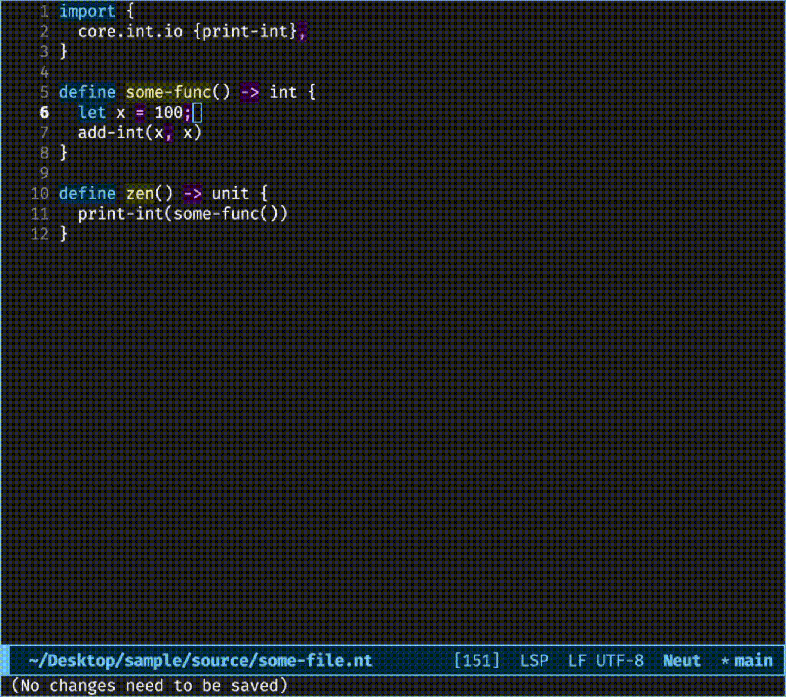

Neut Programming Language
Neut is a functional programming language with static memory management.
Key Features
- Full λ-calculus support
- Predictable, type-directed memory management
- No extra type annotations needed to achieve both of the above
Code Example
A typical program looks as follows:
// the obligatory hello world
define hello() -> unit {
print("Hello, world!\n")
}
// an algebraic data type
data my-list(a) {
| Nil
| Cons(a, my-list(a))
}
// a recursive function with pattern matching
define foo<a>(xs: my-list(a)) -> int {
match xs {
| Nil =>
0
| Cons(_, ys) =>
let my-message = "hey\n";
print(my-message);
add-int(1, foo(ys))
}
}
Static Memory Management
Neut translates a type into a function for discarding and copying values of the type. By using those functions, the compiler translates programs so that every variable is used exactly once.
For example, if a variable is used twice, a translation like the following happens:
// (before)
let xs: list(a) = make-list();
some-func(xs, xs) // `xs` is used twice
// ↓
// (after)
let xs: list(a) = make-list();
let (xs1, xs2) = copy-list-a(xs); // `xs` is used once
some-func(xs1, xs2)
If you need more information, see On Executing Types.
At this point, one concern is whether operations such as taking the length of a list require copying the entire value. Neut avoids such copy operations by using the box modality, achieving something like borrowing. See Static Memory Management and Modality and Memory for details.
Quick List of Other Features
- Call-by-value
- Impure
- Compiles to LLVM IR and native binaries
- The type system ≈ System Fω + ADT + recursion + box modality
- That is, the usual one in functional programming, but a bit generalized
- Built-in LSP support
- Built-in rapid prototyping support as found in scripting languages
- Built-in formatter
You can press the "→" key to go to the next page.
Installation
Installing the Toolchain
To install the toolchain, execute the installation script:
curl -sSL https://raw.githubusercontent.com/vekatze/neut/main/install.sh | bash
Then follow the instructions.
You might also want to configure your editor.
If you prefer a manual installation, see Manual Installation.
Uninstallation
To uninstall, remove the following:
- the binary
~/.local/bin/neut, - related environment variables from your shell config, and
- cache directories in your projects (if desired).
Tutorial
Neut is a module-based functional programming language with static memory management via modality. This chapter offers a quick introduction to the language.
Modules and Sources covers the "module-based" part. We'll see how to use modules in Neut.
Programming in Neut covers the "functional" part. We'll see how to write code in Neut.
Static Memory Management covers the "static" part. We'll see how memory is managed in Neut. We'll also see Neut's technique to optimize memory allocation.
Modality and Memory and Modal Metaprogramming cover the "modality" part. We'll see how memory operations and macros in Neut are organized around modality.
Further Examples presents some libraries written in this language as examples.
This chapter assumes you are familiar with languages like Haskell, OCaml, or F#.
Modules and Sources
In this section, we'll see how to use modules in Neut.
Table of Contents
- Basics of Modules
- Basics of Source Files
- Publishing Modules
- Adding Dependency Modules
- Importing Files
Basics of Modules
Creating, Building, and Executing a Module
Let's create a module by running the following command:
neut create sample
This command creates a template module ./sample/ that prints "Hello, world!".
You can build and execute this module as follows:
cd ./sample
neut build sample --execute # => "Hello, world!"
You can also install the resulting binary and run it directly:
neut build sample --install ./bin # creates a directory `bin` if necessary
./bin/sample # => "Hello, world!"
Structure of a Module
The structure of a module is as follows:
sample/
├── cache/
│ └── ...
├── source/
│ └── sample.nt
└── module.ens
The directory cache is where object files (binary files) and dependencies are put. You don't normally have to go into the directory.
The directory source is where source files are put.
The file module.ens contains meta information about this module, such as dependencies.
You can change the locations of special directories such as cache using module.ens. See Modules for more information.
module.ens
The contents of module.ens look roughly like the following:
{
target {
sample {
main "sample.nt",
allocator "system",
},
},
dependency {
core {
digest "(base64url-encoded checksum)",
mirror [
"https://github.com/.../X-Y-Z.tar.zst",
],
enable-preset true,
},
},
}
target specifies the targets of a module. In the example above, the command neut build sample builds the module using the file source/sample.nt as its entry point.
allocator specifies which allocator is used by the target. By setting it to "mimalloc", you can use mimalloc for that target.
dependency specifies the dependencies of a module. Since our running example is small, the only dependency is core, which plays the same role as the Prelude in other languages.
digest is the base64url-encoded checksum of a dependency.
mirror is a list of URLs of a dependency.
enable-preset makes the dependency behave similarly to the Prelude in other languages. If enabled, the names listed in the dependency's preset are imported automatically into every file in our module.
Basics of Source Files
Editing Source Files
Let's see the contents of source/sample.nt:
// sample.nt
define main() -> unit {
print("Hello, world!\n"); // `print` is defined in `core`
}
The above code defines a function main that returns a value of type unit. This function prints "Hello, world!\n".
Let's try editing the code as follows:
define main() -> unit {
print("Yo\n");
}
Then, build and execute the project:
neut build sample --execute # => Yo
You should be able to see that the result changes accordingly.
Defining Functions
You can also define your own functions:
// sample.nt
import {
core.int.io {print-int},
}
define get-int() -> int {
42
}
define main() -> unit {
print-int(get-int()); // => 42
}
Functions can also take arguments. Let's rewrite sample.nt as follows:
// sample.nt
import {
core.int.io {print-int},
}
define increment(x: int) -> int {
add-int(x, 1)
}
define my-add(x: int, y: int) -> int {
add-int(x, y)
}
define main() -> unit {
print-int(my-add(10, increment(10))); // => 21
}
Top-level items like define are called statements. You'll learn more about them on the next page.
As in F#, statements in Neut are order-sensitive. Therefore, if you define main before my-add, the code won't compile. For forward references, you have to declare names explicitly beforehand using a statement called nominal, which we'll see on the next page.
Publishing Modules
Let's publish our module so others can use increment and my-add.
You can create a tarball snapshot of your module using neut archive:
neut archive 0-1
ls ./archive # => 0-1.tar.zst
The argument of archive must be something like 0-1, 0-1-0, or 1-2-0-1.
You can then publish these tarballs on GitHub, for example.
Adding Dependency Modules
neut get can be used to add dependencies:
# creates a new module
neut create new-item
cd new-item
# adds a sample module that contains `my-add` and `increment` to your module
neut get some-name https://github.com/vekatze/neut-sample/raw/main/archive/0-1-0.tar.zst
The subcommand get fetches the tarball from the specified URL and adds it to the current module. You can then refer to that dependency as some-name in your module.
The new dependency information is saved to module.ens:
{
target {
new-item {
main "new-item.nt",
allocator "system",
},
},
dependency {
core { .. },
// ↓ HERE
some-name {
digest "..",
mirror [
"https://github.com/YOUR_NAME/YOUR_REPO_NAME/raw/main/archive/0-1-0.tar.zst",
],
},
},
}
The canonical identifier of a dependency is the digest of the tarball. Names such as some-name are just aliases.
Importing Files
Importing Files in Dependencies
You can use dependencies in your code:
// new-item.nt
import {
core.int.io {print-int},
some-name.sample {my-add}, // imports `my-add` in `source/sample.nt`
}
define main() -> unit {
print-int(my-add(10, 11)); // ← using `my-add`
}
Let's focus on import. import consists of lines like the one below:
some-name.sample {my-add}
The first component of such a line (some-name) is our alias of the dependency.
What follows (sample) is the relative path to the file from the source directory of the dependency module. Here, you don't have to write the file extension .nt.
Like {my-add} in the example above, every item of an import can optionally have a list of names. Names in these lists are made available after import.
You can also use the fully-qualified form of my-add:
// new-item.nt
import {
core.int.io {print-int},
some-name.sample, // removed `{my-add}`
}
define main() -> unit {
// ↓ using the fully-qualified form of `my-add`
print-int(some-name.sample.my-add(10, 11));
}
Also, files like source/foo/item.nt in some-name can be imported as follows:
import {
some-name.foo.item,
}
Importing Files in the Current Module
Let's try creating a new file new-item/source/foo/greet.nt with the following content:
// foo/greet.nt
define yo() -> unit {
print("Yo");
}
This file can then be used from new-item/source/new-item.nt as follows:
// new-item.nt
import {
this.foo.greet {yo},
}
define main() -> unit {
yo();
}
In other words, the current module is always referred to as this.
Programming in Neut
Here, we'll see how to write programs in Neut.
Table of Contents
Variables
You can use let to define variables:
define hey() -> unit {
let x = "hello";
let y: int = 100;
let z: float = 3.8;
print("hey");
}
The compiler warns about unused variables (x, y, and z in the example above). You can use the special name _ to suppress those warnings:
define hey() -> unit {
let _ = "hello";
let _: int = 100;
let _: float = 3.8;
print("hey");
}
lets can be nested using {..}:
define hey() -> unit {
let x = {
let y: int = 100;
let z: float = 3.8;
"hello"
};
print(x); // => hello
}
You can use e1; e2 as syntactic sugar for let _: unit = e1; e2:
define hey() -> unit {
print("a");
print("b");
}
// ↓ (desugar)
define hey() -> unit {
let _: unit = print("a");
print("b");
}
You can use e; as syntactic sugar for let _: unit = e; Unit:
define hey() -> unit {
print("hey"); // using a trailing semicolon
}
↓
define hey() -> unit {
let _: unit = print("hey");
Unit
}
Functions
Defining Functions at the Top Level
You can use the statement define to define functions:
// defining an ordinary function
define my-func1(x1: int, x2: bool) -> bool {
x2
}
// defining a recursive function
define my-func2(cond: bool) -> int {
if cond {
1
} else {
my-func2(not(cond)) // `my-func2` is available here
}
}
// a function that returns a function
define my-func3() -> (int, bool) -> bool {
my-func1
}
define can also define a function with implicit parameters (or "generics"):
// The `a` in the angle bracket is the implicit parameter of `id`
define id<a>(x: a) -> a {
x
}
define use-id() -> int {
let x = 10;
id(x) // calling `id` without specifying `a` explicitly
}
You can also write the type of a explicitly:
define id<a: type>(x: a) -> a { // `type` is the type of types
x
}
Defining Functions in the Body of a Function
You can use => to define an anonymous function:
define foo() -> int {
let f =
(x, cond) => {
if cond {
x
} else {
add-int(x, 1)
}
};
f(10, False) // → 11
}
You can also use define in the body of a function to define a recursive function:
define foo() -> unit {
let f =
define print-multiple-hellos(counter: int) -> unit {
if eq-int(counter, 0) {
Unit
} else {
print("hello\n");
print-multiple-hellos(sub-int(counter, 1))
}
};
f(10) // prints "hello" 10 times
}
The compiler reports an error if you rewrite the example so that the variable f is used more than once. This behavior prevents unexpected copying of values. You can satisfy the compiler by defining the variable as !f. We'll cover this topic in more detail on the next page.
Calling Functions
You can call a function f with arguments e1, ..., en by writing f(e1, ..., en):
define my-func(x: int, y: int) -> int {
add-int(x, y)
}
define use-my-func() -> int {
my-func(10, 20)
}
You can also use named arguments to rewrite the above use-my-func as follows:
define use-my-func() -> int {
my-func{
x := 10,
y := 20,
}
}
Many primitive functions (from LLVM) are also available. Please see Primitives for more.
Algebraic Data Types
You can use the statement data to define ADTs:
data my-nat {
| My-Zero
| My-Succ(my-nat)
}
// In Haskell:
// data my-nat
// = My-Zero
// | My-Succ my-nat
//------------
data my-list(a) {
| My-Nil
| My-Cons(a, my-list(a))
}
// In Haskell:
// data my-list a
// = My-Nil
// | My-Cons a (my-list a)
Parameters in constructors can optionally have explicit names:
data config {
| Config(count: int, cond: bool)
}
You might want to write this vertically using a trailing comma:
data config {
| Config(
count: int,
cond: bool,
)
}
Creating ADT Values
You can use constructors just like normal functions to create ADT values:
define make-my-list() -> my-list(int) {
My-Cons(1, My-Cons(2, My-Nil))
}
define make-config() -> config {
Config{
count := 10,
cond := True,
}
}
Using ADT Values
You can use match to destructure ADT values:
define sum(xs: my-list(int)) -> int {
match xs {
| My-Nil =>
0
| My-Cons(y, ys) =>
add-int(y, sum(ys))
}
}
Nested matching is also possible:
define foo(xs: my-list(int)) -> int {
match xs {
| My-Nil =>
0
| My-Cons(y, My-Cons(z, My-Nil)) =>
1
| My-Cons(_, _) =>
2
}
}
The result of match can be bound to a variable:
define yo(xs: my-list(int)) -> int {
let val =
match xs {
| My-Nil =>
0
| My-Cons(_, _) =>
1
};
val
}
Type Aliases
If you want to give a name to an existing type expression rather than define new constructors, you can use alias.
You can use alias to define a type alias:
alias computation(a) {
either(my-error, a)
}
alias status {
either(unit, int)
}
Miscellaneous
nominal
You can use nominal for forward references of top-level items:
nominal {
define is-odd(x: int) -> bool, // ← declaration of `is-odd`
}
define is-even(x: int) -> bool {
if eq-int(x, 0) {
True
} else {
is-odd(sub-int(x, 1)) // ← using the nominal definition of `is-odd`
}
}
// ↓ the real definition of `is-odd`
define is-odd(x: int) -> bool {
if eq-int(x, 0) {
False
} else {
is-even(sub-int(x, 1))
}
}
if
The core library defines bool as follows:
data bool {
| False
| True
}
You can use if when you use this bool:
define yo(cond: bool) -> unit {
if cond {
print("yo!")
} else {
print("yo")
}
}
// ↓ desugar
define yo(cond: bool) -> unit {
match cond {
| True =>
print("yo!")
| False =>
print("yo")
}
}
admit
You can use admit to postpone implementing a function and satisfy the type checker:
define my-complex-function(x: int, y: bool) -> int {
admit
}
assert
You can use assert as follows:
define fact(n: int) -> int {
assert "n must be non-negative" {
ge-int(n, 0)
};
if eq-int(n, 0) {
1
} else {
let next = sub-int(n, 1);
mul-int(n, fact(next))
}
}
The type of assert ".." { .. } is unit.
assert checks if a given condition is satisfied. If the condition is True, it does nothing. Otherwise, it reports that the assertion has failed and exits the program with exit code 1.
If you pass --mode release to neut build, assert does nothing.
Additional Notes
- More syntactic sugar is also available. For more, see Terms.
- If you want to call foreign functions (FFI), see Statements.
Static Memory Management
Here, we'll see how memory is managed in Neut. We'll also see some important optimizations.
Table of Contents
- Copying and Discarding Values
- Optimization: Free-Malloc Canceling
- Optimization: Malloc-Free Canceling
- Destination-Passing Style
- Optimization: Avoiding Unnecessary Copies
Copying and Discarding Values
Inserting COPY and DISCARD
In Neut, the content of a variable is copied if the variable is used more than once. For example, consider the following code:
// before compilation (pseudo code)
define foo(xs: list(int)) -> list(int) {
let ys = xs; // using `xs` (1)
let zs = xs; // using `xs` (2)
some-func(ys);
other-func(zs);
xs // using `xs` (3)
}
In the code above, xs is used three times. Therefore, its content is copied twice:
// after compilation (pseudocode)
define foo(xs: list(int)) -> list(int) {
let xs1 = COPY(list(int), xs);
let xs2 = COPY(list(int), xs);
let ys = xs1;
let zs = xs2;
some-func(ys);
other-func(zs);
xs
}
Also, the content of a variable is discarded if the variable isn't used. For example, consider the following code:
// before compilation
define bar(xs: list(int)) -> unit {
Unit
}
In the code above, xs isn't used. Therefore, its content is discarded:
// after compilation (pseudocode)
define bar(xs: list(int)) -> unit {
DISCARD(list(int), xs);
Unit
}
Ignoring the arguments to COPY, this translation ensures that each variable occurs linearly (i.e., exactly once). This forms the basis of memory management in Neut.
If you're interested in how Neut implements this translation, see On Executing Types.
Avoiding Unintentional Copies
To avoid unintentional copies, the compiler requires the ! prefix on a variable name when a copy is needed. For example, consider the following code:
// `string` is provided by the core library.
define make-pair(t: string) -> pair(string, string) {
Pair(t, t)
}
The compiler rejects this code because the variable t is used twice without being defined with the ! prefix.
You can satisfy the compiler by defining t as !t:
define make-pair(!t: string) -> pair(string, string) {
Pair(t, t)
}
The ! prefix is unnecessary if the variable can be copied for free. For example, consider the following code:
define make-pair(x: int) -> pair(int, int) {
Pair(x, x)
}
The compiler accepts this code since we can "copy" integers for free (by reusing the same value).
Optimization: Free-Malloc Canceling
The compiler exploits Neut's static nature to reuse memory. Consider the following code:
data int-list {
| Int-Nil
| Int-Cons(int, int-list)
}
// [1, 5, 9] => [2, 6, 10]
define increment(xs: int-list) -> int-list {
match xs {
| Int-Nil =>
Int-Nil
| Int-Cons(y, ys) =>
let foo = add-int(y, 1);
let bar = increment(ys);
Int-Cons(foo, bar)
}
}
The naive behavior of the Cons clause in the match would be something like the following:
- Extract
yandysfromCons(y, ys) freethe outer tuple ofCons(y, ys)- Calculate
fooandbar - Allocate a memory region using
mallocto represent the tuple ofCons(foo, bar) - Store the calculated values to the pointer and return it
Now, note that:
- the outer tuple of
Cons(y, ys)will never be used after extracting its contents, and that - the outer tuples of
Cons(y, ys)andCons(foo, bar)have the same size.
Using this knowledge, the compiler translates the code so that it reuses the memory region of Cons(y, ys). More specifically, this Cons clause behaves as follows:
- Obtain
yandysfromCons(y, ys) - Calculate
fooandbar - Store the calculated values to
Cons(y, ys)
In other words, when a free is required, the compiler looks for a malloc in the continuation that is the same size and optimizes away such a pair if one exists. The resulting assembly code thus performs in-place updates.
Optimization: Malloc-Free Canceling
Neut also performs the opposite optimization. If a region allocated by malloc does not escape and is eventually deallocated by free, the compiler replaces that heap allocation with a stack allocation.
For example, consider the following code:
define foo() -> int {
let ptr = malloc(8);
store-int(42, ptr);
let value = load-int(ptr);
free(ptr);
value
}
In the code above, the region created by malloc never escapes from foo. Therefore, the compiler can replace it with a stack slot:
// after optimization (pseudocode)
define foo() -> int {
let ptr = alloca(8);
store-int(42, ptr);
load-int(ptr)
}
Destination-Passing Style
Malloc-free canceling is especially useful when combined with destination-passing style.
For example, consider the following code:
define foo(x: int) -> either(int, bool) {
if eq-int(x, 0) {
Left(42)
} else {
Right(True)
}
}
define use-foo() -> unit {
match foo(10) {
| Left(x) =>
cont1
| Right(y) =>
cont2
}
}
Since foo returns its result using the ordinary arrow ->, the result has to be allocated inside foo itself:
// after compilation (pseudocode)
define foo(x: int) -> either(int, bool) {
if eq-int(x, 0) {
let tmp = malloc(..);
// initialize `tmp := Left(42)`
tmp
} else {
let tmp = malloc(..);
// initialize `tmp := Right(True)`
tmp
}
}
define use-foo() -> unit {
let buf = foo(10);
match tag(buf) {
| 0 =>
let x = extract-from-left(buf);
free(buf);
cont1
| _ =>
let y = extract-from-right(buf);
free(buf);
cont2
}
}
In this form, malloc-free canceling does not help much. The memory region created in foo escapes from foo, so foo itself cannot replace that allocation with a stack slot.
To improve this situation, Neut provides destination-passing style. We write such functions using ->> (and =>> for anonymous functions). A function written in this style can still be called in the usual way, but its compiled code receives the result destination from the caller.
Rewriting foo in this style, we get:
define foo(x: int) ->> either(int, bool) {
if eq-int(x, 0) {
Left(42)
} else {
Right(True)
}
}
define use-foo() -> unit {
match foo(10) {
| Left(x) =>
cont1
| Right(y) =>
cont2
}
}
This behaves roughly as follows after compilation:
// after compilation (pseudocode)
define foo(dest: pointer, x: int) -> void {
if eq-int(x, 0) {
let tmp = malloc(..);
// initialize `tmp := Left(42)`
copy(dest, tmp);
free(tmp)
} else {
let tmp = malloc(..);
// initialize `tmp := Right(True)`
copy(dest, tmp);
free(tmp)
}
}
define use-foo() -> unit {
let buf = malloc(..);
foo(buf, 10);
match tag(buf) {
| 0 =>
let x = extract-from-left(buf);
free(buf);
cont1
| _ =>
let y = extract-from-right(buf);
free(buf);
cont2
}
}
Now the crucial malloc/free pairs no longer cross the function boundary. Because of that, malloc-free canceling can optimize them away:
// after malloc-free canceling (pseudocode)
define foo(dest: pointer, x: int) -> void {
if eq-int(x, 0) {
let tmp = alloca(..);
// initialize `tmp := Left(42)`
copy(dest, tmp)
} else {
let tmp = alloca(..);
// initialize `tmp := Right(True)`
copy(dest, tmp)
}
}
define use-foo() -> unit {
let buf = alloca(..);
foo(buf, 10);
match tag(buf) {
| 0 =>
let x = extract-from-left(buf);
cont1
| _ =>
let y = extract-from-right(buf);
cont2
}
}
In this way, destination-passing style turns a returned value into caller-managed storage, making malloc-free canceling effective in cases where the ordinary arrow -> would force a heap allocation.
For simplicity, the code above keeps tmp = alloca(..) and copy(dest, tmp) separate. In practice, LLVM often optimizes this into ordinary assignments.
Optimization: Avoiding Unnecessary Copies
Observing Excessive Copies
Suppose we've defined a function length as follows:
define length(xs: list(int)) -> int {
match xs {
| Nil =>
0
| Cons(_, ys) =>
add-int(1, length(ys))
}
}
Now, consider the following code:
define use-length(!xs: list(int)) -> unit {
let len = length(xs);
some-function(len, xs)
}
Note that the variable xs is used twice. This means that the content of xs is copied just to calculate its length. This is wasteful, and worse, this pattern isn't rare. We need a way to avoid it.
Introducing Noema Types
Fortunately, there is a remedy for this kind of situation.
For any type t, Neut has a type &t. We'll call this type the noema type of t. We'll call a term e a noema if the type of e is a noema type.
Unlike ordinary terms, a noema isn't discarded or copied even when used non-linearly. Also, Neut has primitives to read contents from noemata without consuming them. By using these facts, we can avoid the problem above.
Let's see how we can use noemata, rewriting use-length and length.
Creating a Noema
We can create a noema using on:
define use-length(xs: list(int)) -> unit {
// xs: list(int)
let len on xs =
// xs: &list(int)
length(xs);
// xs: list(int)
some-function(len, xs)
}
on takes a comma-separated list of variables. The variables in the list (xs in this example) are cast to noema types in the body of the let, and cast back to the original types in the continuation.
Conceptually, on can be seen as the following syntactic sugar:
let v on x = e;
cont
// ↓ desugar
let x = unsafe-cast(a, &a, x); // cast: `a` ~> `&a`
let v = e; // (use `&a` in `e`)
let x = unsafe-cast(&a, a, x); // uncast: `&a` ~> `a`
cont
on has to satisfy a certain condition. Consider the following code:
// xs: list(int)
// ...
let ys on xs = xs;
let _ = xs; // (*)
cont
Since xs is discarded at (*), using ys in cont should result in use-after-free. To prevent this kind of behavior, the compiler rejects code that might contain any noema in the result of on. In this case, since the type of ys is &list(int), the compiler rejects this code.
This condition may look a bit artificial at first. On the next page, however, we'll see that it can be understood via modal logic.
Using a Noema: Pattern Matching
If t is an ADT, you can view the content of a value e: &t using case:
define length(xs: &list(int)) -> int {
case xs {
| Nil =>
0
| Cons(_, ys) =>
add-int(1, length(ys))
}
}
case is similar to match. The difference is that, unlike match, case doesn't perform free on its arguments. You can think of case as a read-only version of match.
Also, note that the newly-bound variables in case are wrapped in &(_). In the code above, for example, the type of ys is not list(int), but &list(int).
Now, we have new implementations of length and use-length:
define length(xs: &list(int)) -> int {
case xs {
| Nil =>
0
| Cons(_, ys) =>
add-int(1, length(ys))
}
}
define use-length(xs: list(int)) -> unit {
let len on xs = length(xs);
some-function(len, xs)
}
The code doesn't copy xs anymore, as you can see from the fact that it no longer contains !.
Using a Noema: Embodying
You can also create a value of type a from a value of type &a, as follows:
define make-pair<a>(x: &a) -> pair(a, a) {
Pair(*x, *x)
}
By writing *e, you can copy the content of the noema e, keeping the content intact.
Modality and Memory
Here, we'll see how to interact with the box modality +, which provides a way to work with layers in Neut. We'll then see that both on and *e can be understood as syntactic sugar over this modality.
Table of Contents
Layers and the Box Modality
In Neut, each type a has a corresponding type +a. This type provides a way to work with layers, which are similar to lifetimes in other languages.
Below, we'll first introduce the concept of layers, and then see how to use +a.
Layers and Variables
Every term in Neut has an integer called a layer. Conceptually, a layer can be seen as the level at which a piece of data lives.
The body of a define starts at layer 0:
define foo() -> () -> unit {
// here is layer 0
() => {
// here is also layer 0
Unit
}
}
A variable defined at layer n can only be used at the same layer. For example, the following code is invalid because the variable x is defined at layer 0 but used at layer 3:
define bar() -> unit {
// here is layer 0
let x = Unit; // ← `x` is defined at layer 0
... // ← some layer operations here
// layer 3 (for example)
let v2 =
x; // ← Error: `x` is used at layer 3 (≠ 0)
...
}
Only modality-related operations can change layers, as we'll see below.
Creating Boxes
To create a term of type +a, use box:
define use-box(x: &int, y: &bool, z: &string) -> +pair(int, bool) {
// here is layer 0
// free variables:
// - x: &int
// - y: &bool
// - z: &string
box x, y {
// here is layer -1 (== layer(outer) - 1)
// free variables:
// - x: int
// - y: bool
// - (z is unavailable here because of layer mismatch)
Pair(x, y)
}
}
Some notes on box:
- The type of
xiinbox x1, ..., xn {e}must be of the form&ai. - Given
xi: &ai, the type ofxiin the body ofboxisai.
box behaves as follows:
box x1, ..., xn { e }
↓ // (compile)
let x1 = COPY(a1, x1);
...
let xn = COPY(an, xn);
e
You can omit the sequence x1, ..., xn entirely if no variables need to be copied.
Using Boxes
To use a term of type +a, use letbox:
// `string` is provided by the core library.
define use-letbox(x: int, y: bool, z: string) -> int {
// here is layer 0
// free variables:
// - x: int
// - y: bool
// - z: string
letbox extracted-value = {
// here is layer 1 (== layer(outer) + 1)
// (x, y, and z are unavailable here because of layer mismatch)
box {
// here is layer 0
// free variables:
// - x: int
// - y: bool
// - z: string
x
}
};
// here is layer 0
// free variables:
// - x: int
// - y: bool
// - z: string
extracted-value // == x
}
Operationally, letbox is the same as let:
letbox v = e1;
e2
↓ // (compile)
let v = e1;
e2
More Tools for Boxes
Using Boxes Without Changing the Current Layer
Sometimes you want to use a term of type +a without shifting your current layer. For this, Neut provides letbox-T, which keeps you in the same layer:
define use-letbox-T(x: int, y: bool) -> int {
// here is layer 0
letbox-T value on x, y = {
// here is layer 0 (== layer(outer))
box {42}
};
// here is layer 0
value // == 42
}
letbox-T can, for example, be used to write functions of type (+a) -> a as follows:
define axiom-T<a>(x: +a) -> a {
letbox-T tmp = x;
tmp
}
If you tried to use letbox instead, you'd get an error because it would result in a layer mismatch.
A Shortcut for Creating Boxes
We can, for example, construct a +bool from a bool as follows:
define box-bool(b: bool) -> +bool {
match b {
| True => box {True}
| False => box {False}
}
}
To streamline this kind of mechanical step, Neut provides lift:
define box-bool(b: bool) -> +bool {
lift {b} // `lift` casts `bool` into `+bool`
}
Not all types can be cast using lift. Specifically, it can't be used on any type that contains:
- a type of the form
&a - a type of the form
(a1, ..., an) -> b - a type variable
- an ADT that can contain any of the above
If you can get +t by lifting e: t, you can get the same type using box instead. In this sense, lift is a shortcut for creating boxes.
Desugaring the Two Operations
We've seen the two constructs on and *e. Although they may look a bit artificial at first, they are in fact straightforward applications of the box modality.
Desugar: Borrowing
We can now desugar on as follows:
let x on y, z = e1;
e2
↓ // desugar
letbox-T x on y, z = lift {e1};
e2
This explains why the result type of on has to be restricted to some extent: the restriction comes from lift.
Desugar: Embodying
Using the axiom-T we defined above, we can also desugar *e as follows:
*e
↓ // desugar
let x = e;
axiom-T(box x {x})
Additional Notes
Layers and Free Variables
There is one more rule that must be satisfied for memory safety. If a function is defined at layer n, then any free variable x in the function must satisfy layer(x) <= n.
Without this rule, you could do something like the following:
define joker() -> () -> unit {
// layer 0
let xs: list(int) = make-list();
letbox-T f on xs = {
// layer 0
box {
// layer -1
() => { // ★
letbox k = {
// layer 0
let len = length(xs);
box {Unit}
};
Unit
}
}
};
f // function with xs: &list(int) as a free variable
// FREE(xs)
}
define main() -> unit {
let f = joker();
f(); // xs used after freed here
}
This example would wrongly allow a function at layer 0 (★) to keep a reference to data (xs) that, after the outer letbox completes, could be deallocated, leading to a use-after-free scenario in the body of the main function. Hence, Neut's layer rules prohibit capturing a higher-layer variable in a lower-layer function.
A More Concrete Example: + and Callbacks
Compared with &, it may be a little less obvious when + becomes useful. One such case is the following helper, which reads bytes from a file and passes them to a decoding function:
data error {
| Error(message: string)
}
// `f` only inspects the input, so it takes `&binary`, not `binary`
define decode-from-file<a>(f: (&binary) -> +either(error, a)) -> either(error, a) {
let bytes = read-from-file("path/to/file");
letbox-T result on bytes = f(bytes);
result
}
Here, + lets the function passed to decode-from-file compute a result from borrowed input while still making that result available safely on the outer layer.
Without +, one might try to write the following:
define keep-bytes(arg: &binary) -> either(error, &binary) {
Right(arg)
}
define decode-from-file<a>(f: (&binary) -> either(error, a)) -> either(error, a) {
let bytes = read-from-file("path/to/file");
let result on bytes = f(bytes);
// `bytes` is freed here
result
}
define main() -> unit {
let result = decode-from-file(keep-bytes);
match result {
| Left(_) =>
Unit
| Right(bytes) =>
write-to-file("path/to/out", bin-to-hex(bytes))
}
}
This won't compile because let result on bytes = ... is desugared using lift, and lift does not allow result types that still mention a free type variable such as a.
If it did compile, the following would happen inside main:
decode-from-file(keep-bytes)evaluates toRight(bytes), wherebytesis a reference to the local variablebytesindecode-from-filedecode-from-filereturns and frees that local variablemainuses the dangling reference, causing a use-after-free
Thus, the version without + doesn't work.
The + in the result type asserts that the value produced by f remains valid on the outer layer. In this way, + lets us write a borrowing-based API without forcing the callback result to stay trapped inside the borrowing scope.
Modal Metaprogramming
Here, we'll see how to interact with the code type 'a, which enables metaprogramming.
Table of Contents
Stages and the Code Modality
Neut provides primitives that can only be used at compile time. By using them, we can perform special computations that are not available in ordinary runtime code.
To describe such compile-time parts of a program, Neut has the code type 'a and the concept of stages. They can be understood in much the same way as +a and layers.
Creating and Using Code
Given a term e: a, we can construct a term quote {e}: 'a as follows:
// stage n + 1
quote {
// stage n
e
}
Conversely, given a term e: 'a, we can construct a term unquote {e}: a as follows:
// stage n
unquote {
// stage n + 1
e
}
Every term in Neut has an integer called a stage. A variable defined at stage n can only be used at the same stage. For example, the following code is invalid because the variable x is defined at stage 0 but used at stage -1:
define bar() -> 'int {
// here is stage 0 (The body of a `define` starts at stage 0)
let x = 42; // ← `x` is defined at stage 0
quote {
// here is stage -1
x // ← Error: `x` is used at stage -1 (≠ 0)
}
}
You can use quote and unquote as follows:
define use-code-1() -> int {
// stage 0
unquote {
// stage 1
quote {
// stage 0
10
}
}
}
define use-code-2(x: 'int) -> 'int {
// stage 0
quote {
// stage -1
unquote {
// stage 0
x
}
}
}
Top-Level Meta Functions
The language has two statements for top-level meta functions: inline-meta and define-meta.
inline-meta
inline-meta is the simpler one. This is basically the same as inline except that it starts at stage 1, not 0:
inline-meta duplicate(x: 'int) -> 'pair(int, int) {
// stage 1
quote {
// stage 0
let y = unquote {x};
Pair(y, y)
}
}
You can also define recursive functions using inline-meta:
inline-meta calculate-length<a>(xs: list(a)) -> int {
match xs {
| Nil =>
0
| Cons(_, ys) =>
add-int(1, calculate-length(ys))
}
}
The body of inline-meta is reduced only when the body of define or inline is evaluated.
define-meta
define-meta is useful when generating code recursively.
A typical situation is that a meta function inspects a type at compile time and generates code by recursively handling its component types (pseudocode):
define-meta print-data<a>(x: 'a) -> 'unit {
match magic inspect-type(a) {
| List(t) =>
quote {
..
print-data(unquote {..}) // recursively generate code for `t`
print-data(unquote {..}) // recursively generate code for `list(t)`
..
}
| _ =>
..
}
}
Naive compile-time evaluation may diverge in such a situation: while generating code for some type, the meta function may need to generate code for the same type again.
define-meta avoids this by first specializing itself to its type arguments and memoizing the result. This memoization is performed on a per-file basis. When the same type arguments appear again, the memoized function is reused.
To make this work, define-meta requires every explicit parameter to have a code type:
// valid
define-meta good<a>(x: 'a) -> 'int {
..
}
// invalid
define-meta bad<a>(x: a) -> 'int {
..
}
Like inline-meta, its body starts at stage 1.
Calling Meta Functions
You can call a meta function by writing foo::(bar, baz). This is the same as:
unquote {foo(quote {bar}, quote {baz})}
For example, the following two definitions mean the same thing:
define use-meta() -> pair(int, int) {
duplicate::(10)
}
define use-meta() -> pair(int, int) {
unquote {duplicate(quote {10})}
}
Compile-Time Primitives
Neut provides some compile-time primitives that can only be used at stage 1 or above, including:
magic inspect-type(a), which inspects the typeaand returns a structured valuemagic compile-error(message), which immediately causes a compile-time error
Using these primitives, we can write, for example, functions that behave differently depending on the given types, which would be hard to achieve in ordinary runtime code.
For example, consider the following meta function:
define-meta eq-simple<a>(x: '&a, y: '&a) -> 'bool {
let k = magic inspect-type(a);
match k {
| Int64 =>
quote {
let x = magic cast(&a, int64, unquote {x});
let y = magic cast(&a, int64, unquote {y});
eq-int64(x, y)
}
| Rune =>
quote {
let x = magic cast(&a, rune, unquote {x});
let y = magic cast(&a, rune, unquote {y});
eq-rune(x, y)
}
| _ =>
magic compile-error("eq-simple doesn't support the given type")
}
}
Here, eq-simple inspects a at compile time and chooses the implementation accordingly.
Thus, when we write
define use-eq(x: &int, y: &int) -> bool {
eq-simple::(x, y)
}
the compiler can generate integer equality specialized to int, rather than a generic runtime dispatcher.
More Tools for Code
Embedding Compile-Time Results into Code
Sometimes you want to embed a compile-time calculation result into code without changing the current stage. For this, Neut provides promote:
define-meta make-message<a>() -> 'unit {
let t = magic show-type(a);
quote {
print(unquote {promote {t}});
Unit
}
}
promote is a variant of quote. The difference lies in the fact that promote doesn't shift stages:
// stage n
promote {
// stage n
..
}
promote is useful when a compile-time primitive returns a value that should later appear in runtime code.
Further Examples
If you want to see examples of working code, the core library is a good place to start.
The following libraries may also be helpful:
- argot - An option parser
- ars-postgres - A PostgreSQL client over libpq
- dotenv - Locates and loads env files
- http-base - Provides basic HTTP entities
- json - Handles JSON values
- noa - A test kit emphasizing the property-based approach
- path - Provides path-related operations
- rin - An HTTP client over libcurl
- sero - Saves and loads values using files
- socket - A thin layer over network sockets
- time - Provides time-related operations
- zonk - A parser combinator
Language Reference
In this chapter, you can find all the details of Neut.
Commands
The neut command has subcommands like neut build, neut get, etc. This section describes those subcommands.
Table of Contents
- Common Notes
- neut build
- neut check
- neut clean
- neut archive
- neut create
- neut get
- neut format-source
- neut format-ens
- neut zen
- neut lsp
- neut version
Common Notes
Subcommands and Modules
Most of the subcommands of neut must be executed inside a module. If you execute such a subcommand outside a module, the command will emit an error like the one below:
neut build foo
#=> Error: Couldn't find a module file (Context: /Users/foo/Desktop)
Only the following subcommands can be used outside a module:
neut createneut version
Shared Command-Line Options
Most subcommands share the following command-line options:
--no-colorcan be used to turn off ANSI colors--enable-debug-outputprints debug output--silentsuppresses non-essential output
neut build
neut build builds the current module and creates executables. It also writes cache files for faster subsequent builds.
neut build TARGET builds the target TARGET defined in module.ens. For example, suppose that the module.ens of a module contains the following section:
{
// ..
target {
foo {
main "foo.nt",
},
bar {
main "item/bar.nt",
},
},
// ..
}
In this case, running neut build foo creates the executable foo by building the current module, using the main in foo.nt as the entry point.
The resulting binaries are put inside the module's build directory. You might want to use the option --install to copy those binaries.
Example
# creates a sample project
neut create hello
cd hello
# build and run
neut build hello --execute # => "Hello, world!"
# build the module, copy the resulting binary, and execute the binary
neut build hello --install ./bin
./bin/hello #=> "Hello, world!"
--execute
If you pass --execute to neut build, the resulting binary is executed after the build.
Any extra positional arguments are forwarded to the executable:
neut build hello --execute Alice
--install DIR
If you pass --install DIR to neut build, the resulting binaries are copied to the specified directory.
--skip-link
By default, neut build builds all the source files into object files and then links them all to create an executable. You can pass --skip-link to neut build to skip the last linking phase.
--emit
By default, neut build emits object files.
You can control the emitted artifacts by passing a comma-separated list to --emit:
--emit objectemits object files--emit llvmemits LLVM IR--emit object,llvmemits both
If --emit does not include object, you must also pass --skip-link.
--mode
You can pass --mode {develop,release} as follows:
neut build my-app --mode release
If you don't specify --mode, the mode defaults to develop.
The value passed here can be obtained from source files by using introspect:
define foo() -> unit {
introspect build-mode {
| release =>
// ..
| develop =>
// ..
}
}
neut check
neut check type-checks all the files in the current module. It also creates cache files for faster compilation.
--full
If you pass --full to neut check, the caches of all dependencies are refreshed as well.
neut clean
neut clean removes generated build files for the current module and its dependencies.
More specifically, this command removes directories like the following under the build cache:
(cache-directory)/build/(platform)/(compiler-version)/
For example:
cache/build/arm64-darwin/compiler-0.8.0/
neut archive
neut archive [NAME] creates a module tarball that can be used by neut get.
Notes on Versions
If specified, NAME must be X1-X2-..-Xn, where all the integers are non-negative. For example, the following are valid versions:
1-00-1-02-1-30-0-0-3
If you omit NAME, neut archive automatically selects the next version number by incrementing the newest existing archive. If no archive exists yet, it starts from 0-1-0.
neut archive NAME searches the archive directory for all compatible older versions. For example, suppose the archive directory contains the following files:
1-0.tar.zst1-1.tar.zst2-0.tar.zst2-1.tar.zst
In this case, the command neut archive 2-2 searches the archive directory and finds 2-0 and 2-1 as the older compatible versions of 2-2.
Here, two versions are considered compatible only if they have the same number of leading zeros and the same first non-zero component; the remaining components are compared lexicographically. Thus, 2-2 is compatible with 2-0 and 2-1, whereas 1-0 and 0-1-0 are not compatible.
This command then does the following:
- Computes all the digests of these older compatible tarballs
- Creates a new
module.ensthat contains the list of the older digests - Packs the ens file and the other required files to create a tarball
2-2.tar.zst
The digest information inside module.ens of 2-2.tar.zst should look as follows:
{
target {..},
dependency {..},
antecedent [
"Bp8RulJ-XGTL9Eovre0yQupJpeS3lGNk8Q6QQYua7ag", // ← digest of 2-0.tar.zst
"zptXghmyD5druBl8kx2Qrei6O6fDsKCA7z2KoHp1aqA", // ← digest of 2-1.tar.zst
],
}
This information is then used when resolving dependencies.
You can extract a resulting tarball to see that antecedent information is indeed there.
Using the Newest Compatible Version
Consider the following dependency relation:
- Module
Adepends onBandC. - Module
Bdepends onD (version 1.1). - Module
Cdepends onD (version 1.2).
A ──> B ──> D (1.1)
│
└───> C ──> D (1.2)
Thanks to the antecedent information inside D (1.2), the compiler can detect that D (1.2) is a newer compatible version of D (1.1). The compiler utilizes this knowledge to rewrite the above relation into:
A ──> B ──┐
│ │
└───> C ──┴──> D (1.2)
The compiler uses this procedure to select the newest compatible modules in the dependency relation.
This rewriting won't work if the minor "compatible" version D (1.2) isn't compatible with D (1.1). This incompatibility is a bug in the library D (1.2) and should be fixed by the module author.
Utilizing the Compatibility Relation
Suppose the following:
- Serious bugs were discovered in
D (1.1)andD (1.2). - The author of
Dreleased a bug-fix versionD (1.3). - The authors of
BandChave not yet updated their dependencies.
In this case, we do not have to wait for the authors of B and C to update their dependencies. We can simply add D (1.3) to our module's dependencies:
A ──> B ──┐
│ │
├───> C ──┴──> D (1.2)
│
└────────────> D (1.3)
Then, the compiler automatically rewrites the above relation into:
A ──> B ───┐
│ │
├───> C ───┤
│ │
└──────────┴──> D (1.3)
So we can adopt the fixed version immediately.
neut create
neut create NAME creates a directory ./NAME/ and adds files there to start a new project.
You can also specify --target TARGET_NAME to choose the initial target name. By default, the initial target name is the same as the module name.
neut get
neut get ALIAS URL fetches the external module archive specified by URL and adds it to the current module under the name ALIAS.
neut get some-name https://github.com/USER_NAME/REPO_NAME/raw/main/archive/0-1.tar.zst
Here, the URL must be the URL of an archive that was created by neut archive.
After executing neut get, the new dependency information is saved to module.ens:
{
target {
// ..
},
dependency {
// ..
// ↓ something like this is added automatically
some-name {
digest "xNmQu6It81lGBy1sKvk5_jE4Qt8w8KgkVgGj0RBbbrk",
mirror [
"https://github.com/USER_NAME/REPO_NAME/raw/main/archive/0-1.tar.zst",
],
},
// ..
},
}
Then, the compiler type-checks all the related modules, including the fetched module.
The digest is the base64url-encoded checksum of the tarball.
The mirror is a list of URLs that can be used to obtain the tarball.
Modules in Neut are distinguished by their digests (checksums).
neut get can be used to "update" dependencies. Suppose you specify an existing ALIAS when running neut get ALIAS URL. In this case, if the digest of the new tarball isn't the same as the existing one, the existing dependency in the ens file is replaced by the newer one. If the digest is the same as the existing one, the URL is added to the list mirror.
You can remove a dependency in the ens file to "remove" the module from your module.
You can import dependencies from source files. See the notes on import in Statements for information on how to use definitions in external dependencies.
neut format-source
neut format-source path/to/source/file.nt formats the specified source file and outputs the result to stdout.
--in-place
When the option --in-place is set, format-source performs an in-place update.
--minimize-imports
When the option --minimize-imports is set, format-source removes all the unused items in import {..}.
neut format-ens
neut format-ens path/to/file.ens formats the specified ens file and outputs the result to stdout.
--in-place
When the option --in-place is set, format-ens performs an in-place update.
neut zen
neut zen path/to/source/file.nt builds and executes the specified file as if it were an entry point.
The subcommand zen treats the function zen inside the given file as its entry point (that is, main).
Thus, the type of the function zen must be () -> unit:
define zen() -> unit {
print("hello, world!\n");
}
This command is intended for rapid prototyping.
Trailing positional arguments are forwarded to the generated executable, just as with neut build --execute.
Please see Rapid Prototyping for an example of neut zen in action.
Zen Experience
Suppose that you created a new function deep inside your module.
You can create a test function for it and check its behavior, or modify the main function to call it, but either approach can be cumbersome.
In such cases, zen lets you iterate quickly. Suppose that a file some-file.nt contains a function foo defined as follows:
define foo(x: int) -> int {
do-complex-calculation(x)
}
The behavior of foo can be inspected rapidly by defining a function named zen in the file:
define zen() -> unit {
print-int(foo(10));
}
Then, execute the following command:
neut zen path/to/some-file.nt # => (the result of `foo(10)` is printed)
This can be done even if some-file.nt isn't an entry point of the module. You can think of functions named zen as alternative mains.
neut lsp
neut lsp starts the LSP server. The LSP server has features like linting, jump to definition, etc. More specifically, the LSP server supports the following LSP capabilities:
textDocument/didOpen(lint on open)textDocument/didSave(lint on save)textDocument/completion(complete)textDocument/definition(jump to definition)textDocument/documentHighlight(highlight symbols)textDocument/references(find references)textDocument/formatting(format)textDocument/hover(show the type of a symbol)textDocument/codeAction(code actions such as minimizing imports)workspace/executeCommand(execute code actions)
For more information, please see LSP Showcase and Editor Setup.
neut version
neut version prints the version of the compiler.
Example
neut version
#=> X.Y.Z
Modules
A directory (including all its children) is a module if it contains a file named module.ens.
Below is a list of the configurations in module.ens.
Table of Contents
- target
- zen
- dependency
- archive
- cache
- source
- foreign
- extra-content
- text-file
- preset
- inline-limit
- antecedent
target
The field target defines the entry points of a module. It should look like the following:
{
// ..
target {
TARGET-1 {
main "path/to/source/file-1.nt",
},
// ..
TARGET-N {
main "path/to/source/file-n.nt",
},
},
// ..
}
Suppose that your module has the following target in module.ens:
{
// ..
target {
foo {
main "foo.nt",
},
bar {
main "item/yo.nt",
},
},
// ..
}
In this case, your module has two targets: foo and bar. The entry point of foo is the main function in (source-dir)/foo.nt. The entry point of bar is the main function in (source-dir)/item/yo.nt.
The names in target can be specified when running neut build. For example, given the above definition of target, you can run neut build foo.
The names of targets are also used as the names of executables. For example, if you run neut build foo --install ./bin/, an executable named foo will be created under the directory ./bin/.
The field target is optional. The default value of target is {}.
compile-option
You can add compile-option to a target as follows:
{
target {
foo {
main "foo.nt",
// ↓ here
compile-option [
"-g",
"-O0",
"-fsanitize=address",
"$SOME_ENV_VAR",
"$(some-command arg)",
],
},
},
}
The compiler passes the options specified here to clang when compiling LLVM IRs into object files.
In compile-option, you can use environment variables and shell interpolations.
The field compile-option is optional. The default value of compile-option is [].
link-option
You can add link-option to a target as follows:
{
target {
foo {
main "foo.nt",
// ↓ here
link-option [
"-g",
"-O0",
"$SOME_ENV_VAR",
"$(some-command)",
],
},
},
}
The compiler passes the options specified here to clang when linking object files.
In link-option, you can use environment variables and shell interpolations.
The field link-option is optional. The default value of link-option is [].
build-option
You can add build-option to a target as follows:
{
target {
foo {
main "foo.nt",
// ↓ here
build-option [
"$(pkg-config openssl --libs --cflags)",
// ...
],
},
},
}
Adding an element to build-option is the same as adding the element to both compile-option and link-option.
In build-option, you can use environment variables and shell interpolations.
The field build-option is optional. The default value of build-option is [].
allocator
The field allocator specifies which allocator is used by the target:
{
target {
foo {
main "foo.nt",
allocator "mimalloc",
},
},
}
The following values are available:
"system": the system allocator"mimalloc": mimalloc
The field allocator is optional. The default value of allocator is "system".
zen
The field zen defines the configuration used by neut zen. It should look like the following:
{
// ..
zen {
build-option [
"-fsanitize=address",
],
allocator "mimalloc",
},
// ..
}
The fields available inside zen are the same as those available inside each entry of target:
build-optioncompile-optionlink-optionallocator
These fields affect builds performed by neut zen, rather than neut build TARGET.
The field zen is optional. By default, it uses empty build options and the system allocator.
dependency
The field dependency defines the dependencies of a module. It should look like the following:
{
// ..
dependency {
foo {
digest "(base64url-encoded sha256 checksum)",
mirror [
"URL-1",
// ..
"URL-N",
],
enable-preset <true | false>, // ← optional field
},
// ..
bar { .. },
},
// ..
}
The field digest specifies the checksum of the tarball of the dependency. The digest is a Base64URL-encoded SHA256 checksum of the tarball. This digest is the "real" name of this dependency and is used as an identifier.
The field mirror specifies a list of URLs from which the compiler can fetch the tarball. When fetching the tarball is necessary, the compiler tries these URLs from the beginning to the end.
The optional field enable-preset specifies whether to import the dependency's preset automatically, like the Prelude in other languages. For more information, see the explanation of preset in this section.
The field dependency is optional. The default value of dependency is {}.
archive
The field archive defines the path of the directory into which the subcommand neut archive stores tarballs. It should look like the following:
{
// ..
archive "my-archive",
// ..
}
The field archive is optional. The default value of archive is ./archive/.
cache
The field cache defines the path of the directory in which to store object files, executables, dependencies, etc. It should look like the following:
{
// ..
cache ".cache",
// ..
}
The field cache is optional. The default value of cache is ./cache/.
source
The field source defines the path to the directory where source files are stored. It should look like the following:
{
// ..
source ".",
// ..
}
The field source is optional. The default value of source is ./source/.
foreign
The field foreign defines a way to compile external source files. It should look like the following:
{
// ..
foreign {
input [
"source/foo.c",
"source/bar.c",
],
output [
"foo.o",
"bar.o",
],
script [
"{{clang}} -c -flto=thin -O2 source/foo.c -o {{foreign}}/foo.o",
"{{clang}} -c -flto=thin -O2 source/bar.c -o {{foreign}}/bar.o",
],
},
}
input
The field input specifies the list of external source files. The paths are relative to the root of the module.
When running neut archive, the compiler adds all the input files to the resulting tarball.
output
The field output specifies the output files produced from foreign source files. The paths are relative to a directory named the foreign directory. You can find the foreign directory in the build directory.
When running neut build, the compiler links all the output files in the foreign directory (in addition to Neut's "domestic" object files).
script
The field script specifies how to compile external source files. When running neut build, the compiler executes the specified commands immediately after resolving all the imports.
In the field script, you can use the following placeholders:
{{clang}}: Theclangused by the compiler{{foreign}}: The foreign directory
The compiler skips running the script if all the files in output are newer than input.
When running the script, the compiler sets the current working directory to the module's root directory.
Notes
The field foreign is optional. The default value of foreign is:
{
input [],
output [],
script [],
}
An example of foreign can be found in the core library.
The compiler links the resulting foreign object files without any name mangling. You're strongly encouraged to prefix names in your foreign sources with your module name and the major version to avoid name collisions.
extra-content
The field extra-content defines additional files or directories to include when running neut archive. It should look like the following:
{
// ..
extra-content [
"README.md",
"docs/",
],
// ..
}
Each entry must be a path relative to the module root.
If an entry ends with /, it is treated as a directory. Otherwise, it is treated as a file.
The field extra-content is optional. The default value of extra-content is [].
text-file
The field text-file defines the list of text files that can be embedded into source files at compile time. It should look like the following:
{
// ..
text-file {
some-file "relative/path/from/the/module/root/to/some-file.txt",
other-file "relative/path/from/the/module/root/to/other-file.txt",
},
// ..
}
You can use the keys defined here in source files using import and static:
// foo.nt
import {
// ..
core.string {from-text},
text-file {some-file, other-file},
// ..
}
define use-some-file() -> unit {
print(from-text(static some-file));
print(from-text(static other-file))
}
After specifying a key for a text file in import, you can use static to embed the file's content into the source file at compile time. Here, static assumes that the encoding of the file is UTF-8. For the term-level details of static and text, see Terms and Primitives.
The compiler triggers recompilation when necessary by comparing the modification times of static resources and source files. In the code above, for example, the compiler recompiles foo.nt if you modify the content of some-file.txt.
The field text-file is optional. The default value of text-file is {}.
preset
The field preset defines the list of names that must be imported implicitly when the module is used as a dependency. It should look like the following:
{
// ..
preset {
foo ["my-func", "other-func"],
item.bar ["baz", "qux"],
},
// ..
}
In the example above, the current module is expected to have the following files:
(source-dir)/foo.ntthat contains the definitions ofmy-funcandother-func(source-dir)/item/bar.ntthat contains the definitions ofbazandqux
The field preset is used in combination with enable-preset in dependency.
Suppose we released a module that contains the preset definition shown above. Also, suppose someone is developing a module MMM and has added our module to MMM's dependencies:
// module.ens in MMM
{
// ..
dependency {
sample {
digest "BASE64_URL_ENCODED_SHA256_CHECKSUM",
mirror ["SOME_URL"],
enable-preset true,
},
// ..
},
// ..
}
In this case, source files in MMM automatically import our preset names because enable-preset is true.
As an example, suppose a file in MMM contains an import like the following:
import {
sample.foo {my-func},
}
define baz() -> int {
let i = my-func();
add-int(i, 10)
}
This code is the same as the following since the preset is enabled:
define baz() -> int {
let i = my-func();
add-int(i, 10)
}
The field preset is expected to be used as a way to provide "preludes" like those in other languages.
The field preset is optional. The default value of preset is {}.
inline-limit
The field inline-limit defines the limit on recursion performed during compilation. It should look like the following:
{
// ..
inline-limit 100000,
// ..
}
During compilation, the compiler performs possibly recursive computation when:
- type-checking, and
- expanding the definitions of inline functions.
The inline-limit specifies a limit here. If the limit is exceeded, the compiler reports an error like the following:
/path/to/file.nt:123:45
Error: Exceeded max recursion depth of N during (..)
The field inline-limit is optional. The default value of inline-limit is 1000000.
antecedent
The internal field antecedent defines the list of older compatible versions. This field should look like the following:
{
// ..
antecedent [
"Bp8RulJ-XGTL9Eovre0yQupJpeS3lGNk8Q6QQYua7ag",
// ..
"zptXghmyD5druBl8kx2Qrei6O6fDsKCA7z2KoHp1aqA",
],
// ..
}
This information is used to select the newest compatible version of the module. For more information, see the explanation on neut archive in Commands.
The field antecedent is optional. The default value of antecedent is [].
This field must be modified only by the compiler. If you modify this field manually, the behavior of the compiler is undefined.
Internally, the compiler treats a module as a library if and only if the module's module.ens contains the key antecedent.
Statements
Table of Contents
- import
- define
- inline
- define-meta
- inline-meta
- constant
- data
- alias
- alias-opaque
- resource
- rule-right
- rule-left
- nominal
- foreign
import
import imports names from other files. It should look like the following:
import {
sample.baz,
this.foo,
this.foo.bar {some-func, other-func},
}
import can only appear at the top of a file.
Every item in import is something like the following:
this.foothis.foo.bar {some-func, other-func}sample.baz
An import item starts from the alias of the module (this, sample). The alias of the module is specified in dependency in module.ens. If the file we want to import is inside the current module, we'll write this.
The remaining part of the item is the relative path from the source directory. For example, if we want to import (source-dir)/foo/bar, we'll have to write foo.bar after the alias of the module.
An import item can be constructed by concatenating the alias and the path with .. In the case of this.foo.bar, the alias part is this, and the path part is foo.bar.
You can specify names in {}. The names specified here can be used without qualifiers:
import {
this.foo.bar {some-func},
}
define yo() -> unit {
some-func(arg-1, arg-2)
}
Unlisted names must be qualified:
import {
this.foo.bar,
}
define yo() -> unit {
this.foo.bar.some-func(arg-1, arg-2)
}
You can also list text files in import:
import {
text-file {some-file, other-file}
}
For more on text files, please see the section in Modules.
define
define defines a function. It should look like the following:
define foo(x: int, y: int) -> int {
add-int(x, y)
}
define identity<a>(x: a) -> a {
x
}
Defined functions can then be used:
define use-foo() -> int {
foo(1, 2)
}
define can also declare default arguments by inserting [z1: c1 := d1, ..., zk: ck := dk] between the ordinary parameter list and -> (or ->>):
define bump(x: int)[step: int := 1] -> int {
add-int(x, step)
}
Such a function has type (x: int)[step: int] -> int, and callers can override the default with bump(10)[step := 5]. If the caller omits step, its default expression is evaluated at the time of the call. The bracketed part may be omitted, and [] is also accepted.
define also accepts ->> in place of ->. Such a function is still called in the usual way, but its compiled code uses destination-passing style. For the details of this behavior, please see the section on functions in Terms.
define can optionally have implicit type parameters, as in identity in the example above. The compiler inserts these type parameters at compile time, so you don't have to write them explicitly:
define use-func-with-implicit-arg() -> int {
let x = 10;
let z = identity(x);
z
}
A function with the same name can't be defined in the same file.
All tail-recursive calls in Neut are optimized into loops.
Note that statements are order-sensitive as in F#. Thus, the following code results in an error:
define bar() -> int {
foo() // `foo` is undefined here
}
define foo() -> int {
10
}
You have to use the statement nominal explicitly for forward references.
inline
inline defines an inline function. It should look like the following:
inline foo(x: int, y: int) -> int {
print("foo");
add-int(x, y)
}
inline is the same as define except that the definition is always expanded at compile time. For example, if you write
define use-inline-foo() -> int {
let val = foo(10, 20);
val
}
The compiler will translate the above code into the following:
define use-inline-foo() -> int {
let val = {
let x = 10;
let y = 20;
print("foo");
add-int(x, y)
};
val
}
inline also accepts ->> in place of ->. As with define, such a function is still called in the usual way, while the compiled code uses destination-passing style. For the details of this behavior, please see the section on functions in Terms.
As with define, you can also place a default-argument list in [] between the ordinary parameter list and the arrow.
define-meta
define-meta defines a top-level meta function. It should look like the following:
define-meta make-pair<a, b>(x: 'a, y: 'b) -> 'pair(a, b) {
quote {
let x = unquote {x};
let y = unquote {y};
Pair(x, y)
}
}
define-meta starts at stage 1. When evaluating a call to define-meta, the compiler first specializes the definition to its type arguments and memoizes the result. This memoization is performed on a per-file basis. This allows define-meta to generate recursive code.
As with ordinary functions, define-meta can also have default arguments by placing [] between the ordinary parameter list and the arrow.
Every explicit parameter of define-meta must have a type of the form 'a:
// valid
define-meta eq-data<a>(x: 'a, y: 'a) -> 'bool {
..
}
// invalid
define-meta bad<a>(x: int) -> 'int {
..
}
inline-meta
inline-meta defines an inline meta function. It should look like the following:
inline-meta duplicate(x: 'int) -> 'pair(int, int) {
quote {
let y = unquote {x};
Pair(y, y)
}
}
inline-meta is the same as inline except that the body starts at stage 1, not 0.
It also supports the same default-argument syntax as define-meta.
constant
constant defines a top-level constant. It should look like the following:
constant foo: int {
10
}
constant empty-list<a>: list(a) {
Nil
}
define use-constants() -> list(int) {
let x = foo;
empty-list
}
The compiler tries to reduce the body of a constant into a value at compile time. The compiler reports an error if it can't get a value. For example, the following should result in an error:
constant bar: int {
print("hello");
123
}
data
data defines an algebraic data type (ADT). It should look like the following:
data nat {
| Zero
| Succ(nat)
}
data list(a) {
| Nil
| Cons(a, list(a))
}
data config {
| Config(
count: int,
foo-path: &string,
colorize: bool,
)
}
You can use the content of an ADT value by using match or case:
define length<a>(xs: list(a)) -> int {
// destructure ADT values using `match`
match xs {
| Nil =>
0
| Cons(_, ys) =>
add-int(1, length(ys))
}
}
define length-noetic<a>(xs: &list(a)) -> int {
// read noetic ADT values using `case`
case xs {
| Nil =>
0
| Cons(_, ys) =>
add-int(1, length-noetic(ys))
}
}
define use-config(c: config) -> int {
// pattern-matching in `let` is also possible
let Config{count, foo-path} = c;
let _ = foo-path;
count
}
alias
alias defines a type alias. It should look like the following:
alias optional(a: type) {
either(unit, a)
}
alias my-type {
either(int, bool)
}
The body of alias can be used wherever a type is expected.
alias-opaque
alias-opaque defines an opaque type alias. It should look like the following:
alias-opaque vector(_: type) {
_vector-internal
}
alias-opaque my-type {
either(int, bool)
}
alias-opaque can be used when you want to expose a type constructor while hiding its actual body.
resource
resource defines a new type by specifying how to discard/copy the values of the type. It should look like the following:
resource my-type {
(value: pointer) => {
// .. discard the value ..
},
(value: pointer) => {
// .. create a new clone of the value and return it as pointer ..
},
size, // integer value
}
resource takes three terms. The first term ("discarder") receives a value of the type and discards it. The second term ("copier") receives a value of the type and returns a clone of the value (keeping the original value intact). The third term is the size returned when calling magic call-type(my-type, 2, (..)). This size is also used when a value of the type is returned from a function written using ->>: when the size is non-negative, the caller prepares a destination of that size, and otherwise it uses a one-word temporary slot.
The type of a discarder is (a) -> unit for some a. You might want to call functions like free in this term.
The type of a copier is (a) -> a for some a. This a must be the same as the a used in the discarder. You might want to call functions like malloc in this term.
The third term must have type int. See also: Semantics (call-type)
For example, the following is a definition of a "boxed" integer type with some noisy messages:
resource boxed-int {
// discarder: (pointer) -> unit
(v: pointer) => {
print("discarded!\n");
free(v)
},
// copier: (pointer) -> pointer
(v: pointer) => {
let orig-value = load-int(v);
let new-ptr = malloc(8);
magic store(int, orig-value, new-ptr);
new-ptr
},
-1,
}
// provide a way to introduce a new boxed integer
define create-new-boxed-int(x: int) -> boxed-int {
let new-ptr = malloc(8);
store-int(x, new-ptr);
magic cast(pointer, boxed-int, new-ptr)
}
A value of type boxed-int prints "discarded!\n" when the value is discarded.
resource can be used to define low-level types like arrays.
You can find an example usage of resource in the binary.nt in the core library.
rule-right
rule-right defines a macro-like construct that expands bracketed expressions in a fold-right manner. It should look like the following:
rule-right name {
leaf,
node,
root,
}
Once defined, name can be used with square brackets to accept variable-length arguments:
name[x, y, z, w]
This expands in a fold-right manner to:
root(node(x, node(y, node(z, node(w, leaf(4))))))
where the 4 is the length of [x, y, z, w].
Example: List Construction
The List construct available in the core library is defined using rule-right:
rule-right List {
inline leaf<a>(_: int) -> list(a) {
Nil
},
inline node<a>(x: a, acc: list(a)) -> list(a) {
Cons(x, acc)
},
inline root<a>(x: a) -> a {
x
},
}
With this definition, List[x, y, z] simplifies as follows:
List[x, y, z]
↓
root(node(x, node(y, node(z, leaf(3)))))
↓
Cons(x, Cons(y, Cons(z, Nil)))
rule-left
rule-left defines a macro-like construct that expands bracketed expressions in a fold-left manner. It should look like the following:
rule-left name {
leaf,
node,
root,
}
Once defined, name can be used with square brackets to accept variable-length arguments:
name[x, y, z, w]
This expands in a fold-left manner to:
root(node(node(node(node(leaf(4), x), y), z), w))
where the 4 is the length of [x, y, z, w].
Example: Vector Construction
The Vector construct available in the core library is defined using rule-left:
rule-left Vector {
inline leaf<a>(size: int) -> vector(a) {
make(size)
},
inline node<a>(acc: vector(a), x: a) -> vector(a) {
push-back(acc, x)
},
inline root<a>(x: a) -> a {
x
},
}
With this definition, Vector[a, b, c] simplifies as follows:
Vector[a, b, c]
↓
root(node(node(node(leaf(3), a), b), c))
↓
push-back(push-back(push-back(make(3), a), b), c)
nominal
nominal declares top-level items for forward references. It should look like the following:
nominal {
define is-odd(x: int) -> bool,
data stream(a: type),
}
Nominal definitions can be used to achieve mutual recursion:
nominal {
define is-odd(x: int) -> bool, // nominal definition of `is-odd`
}
// given a non-negative integer `x`, returns true if `x` is even.
define is-even(x: int) -> bool {
if eq-int(x, 0) {
True
} else {
is-odd(sub-int(x, 1)) // ← using nominal definition
}
}
// given a non-negative integer `x`, returns true if `x` is odd.
// ("real" definition of `is-odd`)
define is-odd(x: int) -> bool {
if eq-int(x, 0) {
False
} else {
is-even(sub-int(x, 1))
}
}
If a nominal definition isn't followed by a corresponding real definition, the compiler reports an error.
The following kinds of top-level items can be declared in nominal:
defineinlineconstantdefine-metainline-metaaliasalias-opaquedataresource
foreign
foreign declares functions that are defined in linked objects. It should look like the following:
foreign {
neut_myapp_v1_add_const(int) -> int,
}
Foreign functions declared here can be called by using magic external(..).
Suppose that you have a C source file with the following definition:
// add_const.c
int64_t neut_myapp_v1_add_const(int64_t value) {
return value + 100;
}
By configuring the foreign field in module.ens as described in Modules, you can use the C function above as follows:
foreign {
neut_myapp_v1_add_const(int) -> int,
}
define my-func() -> int {
let x: int = 10;
magic external neut_myapp_v1_add_const(x)
}
You can also use LLVM intrinsics. For example, the LLVM LangRef states that the llvm.sin.* intrinsic is available:
declare float @llvm.sin.f32(float %Val)
declare double @llvm.sin.f64(double %Val)
declare x86_fp80 @llvm.sin.f80(x86_fp80 %Val)
declare fp128 @llvm.sin.f128(fp128 %Val)
declare ppc_fp128 @llvm.sin.ppcf128(ppc_fp128 %Val)
Thus, the following is a valid use of foreign:
foreign {
llvm.sin.f64(float) -> float,
}
define sin(x: float) -> float {
magic external llvm.sin.f64(x)
}
Syscall wrapper functions and library functions are also available:
foreign {
exit(c-int) -> void,
sleep(c-int) -> c-int,
}
Here, the definition of c-int is as follows:
constant _c-int: type {
introspect architecture {
| amd64 =>
int32
| arm64 =>
int32
}
}
data c-int {
| C-Int(_c-int)
}
The type of each parameter in every foreign entry must be a term that compiles to one of int{N}, float{N}, or pointer during compilation. For example, the c-int in exit(c-int) -> void is valid because it compiles to int32 (thanks to an optimization like Haskell's newtype).
The resulting type of every foreign entry must be void or a term that compiles to one of int{N}, float{N}, or pointer during compilation.
When declaring a variadic function, declare only the non-variadic part:
foreign {
printf(pointer) -> c-int,
}
Then, specify the types of variadic arguments when using magic external:
define print-raw(fmt: pointer, len: int, val: pointer) -> c-int {
magic external printf(fmt)(len: int, val: pointer)
// ^^^^^^^^^^^^^^^^^^^^^^
// passing variadic arguments with types
}
Terms
Table of Contents
Basics
Primitive Values
Functions
- (x1: a1, ..., xn: an) -> b
- (x1: a1, ..., xn: an) => { e }
- define f(x1: a1, ..., xn: an) -> c { e }
- inline f(x1: a1, ..., xn: an) -> c { e }
- e(e1, ..., en)
- e{x1 := e1, ..., xn := en}
- exact e
ADT
Necessity and Noema
Metaprogramming
Miscellaneous
Syntactic Sugar
- let x on y1, ..., yn = e1; e2
- *e
- e::(e1, ..., en)
- name[x1, ..., xn]
- if
- when cond { e }
- e1; e2
- try x = e1; e2
- tie x = e1; e2
- pin x = e1; e2
- ?t
type
type is the type of types.
Example
define identity<a: type>(x: a) -> a {
x
}
Syntax
type
Semantics
type is compiled into a pointer to base.#.imm.
Type
(Γ is a context)
----------------
Γ ⊢ type: type
Local Variables
Example
define sample() -> unit {
// defining/using various local variables
let x = Unit;
let foo = x;
let _h-e-l-l-o = foo;
let αβγ = _h-e-l-l-o;
let theSpreadingWideMyNarrowHandsToGatherParadise = αβγ;
let 冥きより冥き道にぞ入りぬべきはるかに照らせ山の端の月 = Unit;
let _ = Unit;
// shadowing (not reassignment)
let x = Unit;
let x =
(x: bool) => {
x // x: bool
};
Unit
}
Syntax
The name of a local variable must satisfy the following conditions:
- It doesn't contain any of
=() `\"'\n\t:;,<>[]{}/*+|&?! - It doesn't start with
A, B, .., Z(uppercase letters)
Semantics
If the content of a variable x is an immediate value, x is compiled into the name of a register that stores the immediate. Otherwise, x is compiled into the name of a register that stores a pointer to the content.
Type
Γ ⊢ t: type
---------------- (tvar)
Γ, α: t ⊢ α: t
Γ ⊢ t: type
---------------- (var)
Γ, x: t ⊢ x: t
Notes
- The compiler reports unused variables. You can use the name
_to suppress those.
Top-Level Variables
Example
import {
core.bool {and},
}
define sample() -> unit {
// using top-level variables
let _ = and; // using an imported top-level name
let _ = core.bool.and; // using the fully qualified name `core.bool.and`
Unit
}
Syntax
The name of a top-level variable is a (possibly) dot-separated sequence of symbols, where each symbol must satisfy the following conditions:
- It doesn't contain any of
=() `\"'\n\t:;,<>[]{}/*+|&?!
Semantics
A top-level variable f is compiled into the following 3-word tuple:
(base.#.imm, 0, POINTER_TO_FUNCTION(f))
See the Note below for a more detailed explanation.
Type
(Γ is a context)
(c: a is defined at the top-level)
----------------------------------
Γ ⊢ c: a
Note
Let's see how top-level variables are compiled. Consider the following top-level definitions:
// (source-dir)/sample.nt
// defining a top-level function `increment`
define increment(x: int) -> int {
add-int(x, 1)
}
define get-increment() -> (int) -> int {
increment // using a top-level variable `increment`
}
increment and get-increment are compiled into LLVM functions like the following:
; (build-dir)/path/to/sample.ll
define fastcc ptr @"this.sample.increment"(ptr %_1) {
%_2 = ptrtoint ptr %_1 to i64
%_3 = add i64 %_2, 1
%_4 = inttoptr i64 %_3 to ptr
ret ptr %_4
}
define fastcc ptr @"this.sample.get-increment"() {
; `increment` in `get-increment` is lowered to the following code:
; calculate the size of 3-word tuples
%_1 = getelementptr ptr, ptr null, i32 3
%_2 = ptrtoint ptr %_1 to i64
; allocate memory
%_3 = call fastcc ptr @malloc(i64 %_2)
; store contents
%_4 = getelementptr [3 x ptr], ptr %_3, i32 0, i32 0
%_5 = getelementptr [3 x ptr], ptr %_3, i32 0, i32 1
%_6 = getelementptr [3 x ptr], ptr %_3, i32 0, i32 2
store ptr @"base.#.imm", ptr %_4 ; tuple[0] = `base.#.imm`
store ptr null, ptr %_5 ; tuple[1] = null
store ptr @"this.sample.increment", ptr %_6 ; tuple[2] = (function pointer)
; return the pointer to the tuple
ret ptr %_3
}
Incidentally, these 3-word tuples are optimized away as long as top-level variables (functions) are called directly with arguments.
let
Example
define use-let() -> unit {
// `let`
let t = "test";
print(t)
}
define use-let() -> unit {
let bar = {
// nested `let`
let foo = some-func();
other-func(foo)
};
do-something(bar)
}
define use-let() -> unit {
// `let` with a type annotation
let t: &string = "test";
print(t)
}
let can be used to destructure an ADT value:
data item {
| Item(i: int, b: bool)
}
define use-item(x: item) -> int {
// use `let` with a pattern
let Item(i, _) = x; // ← here
i
}
define use-item-2(x: item) -> int {
// use `let` with a named-field pattern
let Item{i} = x;
i
}
Syntax
let p = e1; e2
let p: t = e1; e2
Semantics
If p is a variable x, then let x = e1; e2 binds the result of e1 to x and then evaluates e2.
If p is a non-variable pattern, let p = e1; e2 is the following syntactic sugar:
let p = e1;
e2
↓
match e1 {
| p =>
e2
}
Type
If p is a variable x, then:
Γ ⊢ e1: a
Γ, x: a ⊢ e2: b
---------------------
Γ ⊢ let x = e1; e2: b
If p is a non-variable pattern, the type is derived from the desugared form.
Integers
Example
define foo() -> unit {
let _: int = 100;
let _: int16 = -16;
let _: int = +1_000_000;
let _: int = 0b1010_1010;
let _: int = 0o755;
let _: int = 0xDEAD_BEEF;
Unit
}
Syntax
Underscores in integer literals are ignored.
After removing all _ characters, an integer literal must have one of the following forms:
[+-]?[0-9]+
[+-]?0b[01]+
[+-]?0o[0-7]+
[+-]?0x[0-9A-F]+
So, for example, 3, -16, +1_000_000, 0b1010_1010, 0o755, and 0xDEAD_BEEF are valid integer literals.
Semantics
The same as LLVM integers.
Type
The type of an integer is unknown in itself. It must be inferred to be one of the following types:
int1int2int4int8int16int32int64
It can also be inferred as an ADT with no type parameters and exactly one constructor with one field, as long as tracing back from that type eventually reaches an integer type. For example, given
data inner {
| Inner(int)
}
data wrapper {
| Wrapper(inner)
}
Then 42: wrapper holds.
Note
- The type
intis also available. For more, see Primitives.
Floats
Example
define foo() -> unit {
let _: float = 3.8;
let _: float32 = -0.2329;
let _: float = +1_234.5e-2;
let _: float = 6.0e23;
let _: float = 0x1.Ap2;
let _: float = 0x1.8;
Unit
}
Syntax
Underscores in float literals are ignored.
After removing all _ characters, a decimal floating-point literal must match:
[+-]?[0-9]+\.[0-9]+(e[+-]?[0-9]+)?
After removing all _ characters, a hexadecimal floating-point literal must match:
[+-]?0x[0-9A-F]+\.[0-9A-F]+(p[+-]?[0-9]+)?
So, for example, 3.8, -0.2329, +1_234.5e-2, 6.0e23, 0x1.Ap2, and 0x1.8 are valid float literals.
In hexadecimal floating-point literals, the p exponent is base-2.
Semantics
The same as LLVM floats.
Type
The type of a float is unknown in itself. It must be inferred to be one of the following types:
float16float32float64
It can also be inferred as an ADT with no type parameters and exactly one constructor with one field, as long as tracing back from that type eventually reaches a float type. For example, given
data inner {
| Inner(float)
}
data wrapper {
| Wrapper(inner)
}
Then 3.14: wrapper holds.
Note
- The type
floatis also available. For more, see Primitives.
Runes
Example
define foo() -> unit {
let _: rune = `A`;
// ^^^
let _: rune = `\n`;
// ^^^
let _: rune = `\u{123}`;
// ^^^^^^^^^
Unit
}
Syntax
`A`, `\n`, `\u{123}`, etc.
The available escape sequences in rune literals are the same as those of the literal form of static.
Semantics
The value of a rune literal is represented as its UTF-8 byte sequence packed into an int32.
Type
(Γ is a context)
(c is a rune literal)
---------------------
Γ ⊢ c: rune
Note
(1) You can write `\u{12AB}`, for example, to represent U+12AB (`ካ`).
(2) We have the following equalities, for example:
`A` == magic cast(int32, rune, 0x41)
`Γ` == magic cast(int32, rune, 0xCE93)
`あ` == magic cast(int32, rune, 0xE38182)
`⭐` == magic cast(int32, rune, 0xE2AD90)
You can see this by calling the following function:
define print-star() -> unit {
// prints "⭐"
pin t = core.string.singleton(magic cast(int32, rune, 0xE2AD90));
print-line(t)
}
Strings
Example
define foo() -> unit {
let _: &string = "test";
// ^^^^^^
Unit
}
Syntax
The syntax of a string literal is the same as that of the literal form of static.
Semantics
If t is a string literal, then t is shorthand for magic cast(text, &string, static t).
Type
(Γ is a context)
(t is a string literal)
-----------------------
Γ ⊢ t: &string
Note
- For the exact syntax and internal representation of the literal part, see
static.
(x1: a1, ..., xn: an) -> b
(x1: a1, ..., xn: an) -> b is the type of ordinary functions. Replacing -> with ->> yields the type of destination-passing functions. A function type can also have a bracketed default-argument part after the ordinary parameters, such as (value: int)[step: int] -> int.
Example
// a function that accepts ints and returns bools
(value: int) -> bool
// a destination-passing function that returns `either(int, bool)`
(value: int) ->> either(int, bool)
// this is equivalent to `(_: int) -> bool`:
(int) -> bool
// using a type variable
<a: type>(x: a) -> a
// this is equivalent to `<a: _>(x: a) -> a`
<a>(x: a) -> a
// a function with a default argument named `step`
(value: int)[step: int] -> int
Syntax
<x1: a1, ..., xn: an>(y1: b1, ..., ym: bm) -> c
<x1: a1, ..., xn: an>(y1: b1, ..., ym: bm)[z1: c1, ..., zk: ck] -> c
<x1: a1, ..., xn: an>(y1: b1, ..., ym: bm) ->> c
<x1: a1, ..., xn: an>(y1: b1, ..., ym: bm)[z1: c1, ..., zk: ck] ->> c
The following abbreviations are available:
(y1: b1, ..., ym: bm) -> c
// ↓
// <>(y1: b1, ..., ym: bm) -> c
(b1, ..., bm) -> c
// ↓
// (_: b1, ..., _: bm) -> c
<a1, ..., an>(y1: b1, ..., ym: bm) -> c
// ↓
// <a1: _, ..., an: _>(y1: b1, ..., ym: bm) -> c
The same abbreviations are available when -> is replaced with ->>.
The bracketed part may be omitted, and [] is also accepted. This default-argument part is included in the function type, so both the keys and their order must match during type checking.
Semantics
A function type is compiled into a pointer to base.#.cls. For more, please see On Executing Types.
Type
Γ, α1: s1, ..., αn: sn, x1: t1, ..., xm: tm, z1: u1, ..., zk: uk ⊢ v: type
--------------------------------------------------------------------------------
Γ ⊢ <α1: s1, ..., αn: sn>(x1: t1, ..., xm: tm)[z1: u1, ..., zk: uk] -> v: type
Omitting the bracketed part means k = 0. The same rule applies to ->>.
(x1: a1, ..., xn: an) => { e }
=> can be used to create an anonymous function. Replacing => with =>> yields a destination-passing anonymous function. You can also insert a default-argument list between the ordinary parameter list and the arrow.
Example
define use-function() -> int {
let f =
(x: int, y: int) => {
let z = add-int(x, y);
mul-int(z, z)
};
let id =
<a>(x: a) => {
x
};
let step =
(x: int) =>> {
Pair(x, add-int(x, 1))
};
let result = f(10, 20);
let _ = id(42);
let Pair(a, b) = step(10);
add-int(result, add-int(a, b))
}
Syntax
(x1: a1, ..., xn: an)[y1: b1 := d1, ..., ym: bm := dm] => {
e
}
(x1: a1, ..., xn: an) => {
e
}
(x1: a1, ..., xn: an)[y1: b1 := d1, ..., ym: bm := dm] =>> {
e
}
(x1: a1, ..., xn: an) =>> {
e
}
// You can omit type annotations
(x1, ..., xn) => {
e
}
The following abbreviation is available:
(x1, ..., xn) => { e }
// ↓
// (x1: _, ..., xn: _) => { e }
The same abbreviation is available when => is replaced with =>>.
Type annotations inside the default-argument list can also be omitted when they can be inferred. For example,
(x: int)[step := 1] => {
add-int(x, step)
}
has type (x: int)[step: int] -> int.
If an anonymous function is defined at layer n, then any free variable x in the function must satisfy layer(x) <= n. For example, the following is not a valid term:
define return-int(x: +int) -> +() -> int {
// here is layer 0
box {
// here is layer -1
() => {
letbox result =
// here is layer 0
x; // ← error
result
}
}
}
because the free variable x in the anonymous function is at layer 0, whereas the anonymous function is at layer -1, so the condition layer(x) <= n is not satisfied.
For more on layers, please see the section on box, letbox, and letbox-T.
Semantics
Anonymous functions are compiled into three-word closures. For more, please see On Executing Types.
When =>> is used, the closure uses destination-passing style when applied. The same destination-passing scheme is used for ->> as well. The source-level calling syntax remains the usual one, but the caller passes the result destination to the callee.
This is useful when combined with malloc-free canceling. For example, if a function returns an ADT value using the ordinary arrow ->, then the function itself has to allocate that result. With ->>, the allocation choice moves to the caller, so temporary heap allocations can often be removed.
For example, consider the following definitions:
define foo(x: int) ->> either(int, bool) {
if eq-int(x, 0) {
Left(42)
} else {
Right(True)
}
}
define use-foo() -> unit {
match foo(10) {
| Left(x) =>
cont1
| Right(y) =>
cont2
}
}
These behave roughly as follows after compilation:
// pseudocode
define foo(dest: pointer, x: int) -> void {
if eq-int(x, 0) {
let tmp = malloc(..);
// initialize `tmp := Left(42)`
copy(dest, tmp);
free(tmp)
} else {
let tmp = malloc(..);
// initialize `tmp := Right(True)`
copy(dest, tmp);
free(tmp)
}
}
define use-foo() -> unit {
let buf = malloc(..);
foo(buf, 10);
match tag(buf) {
| 0 =>
let x = extract-from-left(buf);
free(buf);
cont1
| _ =>
let y = extract-from-right(buf);
free(buf);
cont2
}
}
After malloc-free canceling, this can be simplified further:
// pseudocode
define foo(dest: pointer, x: int) -> void {
if eq-int(x, 0) {
let tmp = alloca(..);
// initialize `tmp := Left(42)`
copy(dest, tmp)
} else {
let tmp = alloca(..);
// initialize `tmp := Right(True)`
copy(dest, tmp)
}
}
define use-foo() -> unit {
let buf = alloca(..);
foo(buf, 10);
match tag(buf) {
| 0 =>
let x = extract-from-left(buf);
cont1
| _ =>
let y = extract-from-right(buf);
cont2
}
}
The size of the destination is determined by the value returned by magic call-type(t, 2, ...). When the size is non-negative, the caller prepares a destination of that size. Otherwise, the caller uses a one-word temporary slot and passes that to the callee instead.
Type
Γ, α1: s1, ..., αn: sn, x1: t1, ..., xm: tm ⊢ e: u
------------------------------------------------------------------------------------------------------
Γ ⊢ <α1: s1, ..., αn: sn>(x1: t1, ..., xm: tm) => {e}: <α1: s1, ..., αn: sn>(x1: t1, ..., xm: tm) -> u
Replacing => with =>> changes the resulting type from -> u to ->> u.
When default arguments are present, the resulting type additionally contains the bracketed default-argument part, and those binders are also available in the body.
Note
- Anonymous functions are reduced at compile time when possible. If you would like to avoid this behavior, consider using
define.
define f(x1: a1, ..., xn: an) -> c { e }
define (at the term-level) can be used to create a function with possible recursion. Replacing -> with ->> yields a destination-passing function. As with anonymous functions, you can insert a default-argument list between the ordinary parameter list and the arrow.
Example
define use-define() -> int {
let c = 10;
let f =
// term-level `define` with a free variable `c`
define some-recursive-func(x: int) -> int {
if eq-int(x, 0) {
0
} else {
add-int(c, some-recursive-func(sub-int(x, 1)))
}
};
f(100)
}
Syntax
define name<x1: a1, ..., xn: an>(y1: b1, ..., ym: bm) -> c {
e
}
define name<x1: a1, ..., xn: an>(y1: b1, ..., ym: bm)[z1: c1 := e1, ..., zk: ck := ek] -> c {
e
}
define name<x1: a1, ..., xn: an>(y1: b1, ..., ym: bm) ->> c {
e
}
define name<x1: a1, ..., xn: an>(y1: b1, ..., ym: bm)[z1: c1 := e1, ..., zk: ck := ek] ->> c {
e
}
The following abbreviations are available:
define name(y1: b1, ..., ym: bm) -> c {e}
// ↓
// define name<>(y1: b1, ..., ym: bm) -> c {e}
define name<a1, ..., an>(y1: b1, ..., ym: bm) -> c {e}
// ↓
// define name<a1: _, ..., an: _>(y1: b1, ..., ym: bm) -> c {e}
The same abbreviations are available when -> is replaced with ->>.
Type annotations inside the default-argument list can be omitted when they can be inferred, as in define add(x: int)[step := 1] -> int { add-int(x, step) }.
If a term-level define is at layer n, then any free variable x in it must satisfy layer(x) <= n.
Semantics
A term-level define is lifted to a top-level definition using lambda lifting. For example, consider the following example:
define use-define() -> int {
let c = 10;
let f =
// term-level `define` with a free variable `c`
define some-recursive-func(x: int) -> int {
if eq-int(x, 0) {
0
} else {
add-int(c, some-recursive-func(sub-int(x, 1)))
}
};
f(100)
}
The code above is compiled into something like the following:
// the free variable `c` is now a parameter
define some-recursive-func(c: int, x: int) -> int {
if eq-int(x, 0) {
0
} else {
let f =
(x: int) => {
some-recursive-func(c, x)
};
add-int(c, f(sub-int(x, 1)))
}
}
define use-define() -> int {
let c = 10;
let f =
(x: int) => {
some-recursive-func(c, x)
};
f(100)
}
When ->> is used, the lifted function and the resulting closure use destination-passing style. The function is still called as usual. For the details of this behavior, please see the section on anonymous functions.
Type
Γ, x1: a1, ..., xn: an, f: (x1: a1, ..., xn: an) -> t ⊢ e: t
----------------------------------------------------------------------
Γ ⊢ define f(x1: a1, ..., xn: an) -> t {e}: (x1: a1, ..., xn: an) -> t
Replacing -> with ->> changes the resulting type from:
(x1: a1, ..., xn: an) -> t
to:
(x1: a1, ..., xn: an) ->> t
When default arguments are present, the resulting type additionally contains the bracketed default-argument part.
Note
- Functions defined by term-level
definearen't inlined at compile time, even if they contain no recursion.
inline f(x1: a1, ..., xn: an) -> c { e }
inline (at the term-level) can be used to create an inline function. Replacing -> with ->> yields a destination-passing inline function. The same default-argument syntax as define is available here as well.
Example
define use-inline() -> int {
let f =
inline add-and-double(x: int, y: int) -> int {
let z = add-int(x, y);
mul-int(z, z)
};
let result = f(10, 20);
result
}
Syntax
inline name<x1: a1, ..., xn: an>(y1: b1, ..., ym: bm) -> c {
e
}
inline name<x1: a1, ..., xn: an>(y1: b1, ..., ym: bm)[z1: c1 := e1, ..., zk: ck := ek] -> c {
e
}
inline name<x1: a1, ..., xn: an>(y1: b1, ..., ym: bm) ->> c {
e
}
inline name<x1: a1, ..., xn: an>(y1: b1, ..., ym: bm)[z1: c1 := e1, ..., zk: ck := ek] ->> c {
e
}
The following abbreviations are available:
inline name(y1: b1, ..., ym: bm) -> c {e}
// ↓
// inline name<>(y1: b1, ..., ym: bm) -> c {e}
inline name<a1, ..., an>(y1: b1, ..., ym: bm) -> c {e}
// ↓
// inline name<a1: _, ..., an: _>(y1: b1, ..., ym: bm) -> c {e}
The same abbreviations are available when -> is replaced with ->>.
You can also insert a default-argument list between the ordinary parameter list and the arrow, as in:
inline add(x: int)[step: int := 1] -> int {
add-int(x, step)
}
If a term-level inline is at layer n, then any free variable x in it must satisfy layer(x) <= n.
Semantics
A term-level inline is the same as a term-level define, except that the resulting function is always expanded at compile time. When ->> is used, the inlined function uses destination-passing style. For the details of this behavior, please see the section on anonymous functions.
Type
Γ, x1: a1, ..., xn: an, f: (x1: a1, ..., xn: an) -> t ⊢ e: t
----------------------------------------------------------------------
Γ ⊢ inline f(x1: a1, ..., xn: an) -> t {e}: (x1: a1, ..., xn: an) -> t
Replacing -> with ->> changes the resulting type from:
(x1: a1, ..., xn: an) -> t
to:
(x1: a1, ..., xn: an) ->> t
When default arguments are present, the resulting type additionally contains the bracketed default-argument part.
Note
- Functions defined by term-level
inlineare always inlined at compile time. If you would like to avoid this behavior, consider usingdefine.
e(e1, ..., en)
Given a function e and arguments e1, ..., en, we can write e(e1, ..., en) to denote a function application. If e has default arguments, the application may be followed by a bracketed list of overrides.
Example
define use-function() -> unit {
let _ = foo();
// ^^^^^
let _ = bar(1);
// ^^^^^^
let _ = baz("hello", True);
// ^^^^^^^^^^^^^^^^^^
Unit
}
Syntax
e(e1, ..., en)
e<t1, ..., tm>(e1, ..., en)
e(e1, ..., en)[x1 := d1, ..., xk := dk]
e<t1, ..., tm>(e1, ..., en)[x1 := d1, ..., xk := dk]
If e has implicit parameters, you can specify them explicitly using the latter form. For example, if e: <a>(a) -> unit, then e<int>(v) specifies the implicit parameter a as int.
If e has default arguments, you can override some or all of them by writing
[x1 := d1, ..., xk := dk]
after the ordinary argument list. These overrides are matched by key.
Semantics
Given a function application e(e1, ..., en), if e has an ordinary function type, it is evaluated as follows:
- Computes
e,e1, ...,eninto valuesv,v1, ...,vn - Extracts the contents from the closure
v, obtaining the tuple of its free variables and a function label - Deallocates the tuple of the closure
v - Calls the function label with the tuple and
v1, ...,vnas arguments
If e has a noetic function type such as &(a1, ..., an) -> b, it is evaluated as follows:
- Computes
e,e1, ...,eninto valuesv,v1, ...,vn - Reads the contents of the closure
v, obtaining the tuple of its free variables and a function label - Copies all the free variables captured by
e - Executes the function body using those copies and
v1, ...,vn
If e has a destination-passing function type, it is evaluated as follows:
- Prepares the result destination
- Computes
e,e1, ...,eninto values - Performs the corresponding call above, passing the destination as an extra argument
- Reads the result from that destination
When the size of the result type is non-negative, the destination has that size. Otherwise, the caller uses a one-word temporary slot that stores a pointer to the result.
When a default argument is omitted, its default expression is evaluated at the time of the call. In particular, each call that omits the argument computes a fresh value rather than reusing one from the function definition.
Type
Γ ⊢ e: <α1: a1, .., αn: an>(y1: b1, .., ym: bm) -> c Γ ⊢ e1: b1 .. Γ ⊢ em: bm
---------------------------------------------------------------------------------------
Γ ⊢ e(e1, .., em): c[α1 := ?M1, .., αn := ?Mn, y1 := e1, .., ym := em]
The ?Mis in the above rule are metavariables that must be inferred by the compiler.
The same rule also applies when e has type:
<α1: a1, .., αn: an>(y1: b1, .., ym: bm) ->> c&<α1: a1, .., αn: an>(y1: b1, .., ym: bm) -> c&<α1: a1, .., αn: an>(y1: b1, .., ym: bm) ->> c
When e has a default-argument part such as [z1: c1, .., zk: ck], the application may additionally provide [zi := di], and omitted keys use the defaults declared by the function.
e{x1 := e1, ..., xn := en}
e{x1 := e1, ..., xn := en} is an alternative notation for applying a function.
Example
define foo(x: int, y: bool, some-path: &string) -> unit {
// ...
}
define use-foo() -> unit {
foo{
x := 10,
y := True,
some-path := "/path/to/file",
}
}
Syntax
e{x1 := e1, ..., xn := en}
Semantics
The same as e(e1, ..., en).
Type
The same as e(e1, ..., en).
Note
This notation might be useful when used in combination with ADTs:
data config {
| Config(
count: int,
path: &string,
colorize: bool,
)
}
constant some-config: config {
Config{
count := 10,
colorize := True,
path := "/path/to/file", // you can reorder arguments
}
}
If the argument is a variable that has the same name as the parameter, you can use a shorthand notation:
define use-foo() -> unit {
let x = 10;
let y = True;
let some-path = "/path/to/file";
foo{x, y, some-path} // == foo{x := x, y := y, some-path := some-path}
}
exact e
Given a function e, exact e supplies all the implicit parameters of e by inserting holes.
Example
define id<a>(x: a) -> a {
x
}
define use-id() -> unit {
let g: (x: int) -> int = exact id;
Unit
}
Note that the following won't type-check:
define id<a>(x: a) -> a {
x
}
define use-id() -> unit {
let g: (x: int) -> int = id;
Unit
}
This is because the type of id is <a>(x: a) -> a, not (x: ?M) -> ?M.
Syntax
exact e
Semantics
Given a term e of type <x1: a1, ..., xn: an>(y1: b1, ..., ym: bm) -> c,
exact e
is translated into the following:
(y1: b1, ..., ym: bm) => {
e<_, ..., _>(y1, ..., ym)
}
Type
Γ ⊢ e: <α1: a1, ..., αn: an>(y1: b1, ..., ym: bm) -> c
--------------------------------------------------------------------
Γ ⊢ exact e: {(y1: b1, ..., ym: bm) -> c}[α1 := ?M1, ..., αn := ?Mn]
Here, ?Mis are metavariables that must be inferred by the type checker.
Note
As you can see from its semantics, an exact is just a shorthand for a "hole-application" that fills in implicit parameters.
ADT Formation
After defining an ADT using the statement data, you can use the ADT.
Example
data my-nat {
| Zero
| Succ(my-nat)
}
define use-nat-type() -> my-nat {
Zero
}
Syntax
The same as that of top-level variables.
Semantics
The same as that of top-level variables.
Type
If an ADT some-adt is nullary, the type of some-adt is type.
Otherwise, suppose that an ADT some-adt is defined as follows:
data some-adt(x1: a1, ..., xn: an) {..}
In this case, the type of some-adt is (x1: a1, ..., xn: an) -> type.
Constructors (ADT Introduction)
After defining an ADT using the statement data, you can use the constructors to construct values of the ADT.
Example
data my-nat {
| Zero
| Succ(my-nat)
}
define create-nat() -> my-nat {
// `Succ` and `Zero` are constructors
Succ(Succ(Zero))
}
Syntax
The same as that of top-level variables, except that constructors must be capitalized.
Semantics
The same as that of top-level variables.
Type
If a constructor c is nullary, the type of c is the ADT type. For example, consider the following code:
data some-adt {
| C1
}
data other-adt(a: type) {
| C2
}
In this case,
- the type of
C1issome-adt, and - the type of
C2isother-adt(?M), where the?Mmust be inferred by the compiler.
If a constructor c isn't nullary, the type of c is the function type that takes specified arguments and turns them into the ADT type. For example, consider the following code:
data some-adt {
| C1(foo: int)
}
data other-adt(a: type) {
| C2(bar: bool, baz: other-adt(a))
}
In this case,
- the type of
C1is(foo: int) -> some-adt, and - the type of
C2is(bar: bool, baz: other-adt(?M)) -> other-adt(?M).
match
You can use match to destructure ADT values or integers.
Example
data my-nat {
| Zero
| Succ(my-nat)
}
define foo(n: my-nat) -> int {
match n {
| Zero =>
100
| Succ(m) =>
foo(m)
}
}
define bar(n: my-nat) -> int {
// You can use nested patterns
match n {
| Zero =>
100
| Succ(Succ(m)) => // ← a nested pattern
200
| Succ(m) =>
foo(m)
}
}
define eq-nat(n1: my-nat, n2: my-nat) -> bool {
// `match` can handle multiple values
match n1, n2 {
| Zero, Zero =>
True
| Succ(m1), Succ(m2) =>
eq-nat(m1, m2)
| _, _ =>
False
}
}
define literal-match(x: int) -> int {
// You can use `match` against integers
match x {
| 3 =>
30
| 5 =>
50
| _ =>
add-int(x, 10)
}
}
Syntax
match e1, ..., en {
| pattern-1 =>
body-1
...
| pattern-m =>
body-m
}
Semantics
The semantics of match is the same as the semantics of ordinary pattern matching, except that ADT values are consumed after branching.
For example, let's see how my-nat in the following code is used in match:
data my-nat {
| Zero
| Succ(my-nat)
}
The internal representation of n: my-nat is something like the following:
Zero:
(0) // 1-word tuple
Succ:
(1, pointer-to-m) // 2-word tuple
When evaluating match, the runtime inspects the first element of the "tuple" n.
define foo(n: my-nat) -> int {
// inspects the first element of `n` here
match n {
| Zero =>
100
| Succ(m) =>
foo(m)
}
}
If the first element is 0, which means that we found an ADT value of Zero, the runtime frees the outer tuple of (0), and then evaluates 100.
If the first element is 1, which means that we found an ADT value of Succ, the runtime gets the pointer to the second element of n, binds it to m, frees the outer tuple of (1, pointer-to-m), and then evaluates foo(m).
Type
Γ ⊢ e1: a1
...
Γ ⊢ en: an
Γ ⊢ patterns_1 ⇐ (a1, ..., an) ⇒ Δ_1
Γ, Δ_1 ⊢ body-1: b
...
Γ ⊢ patterns_m ⇐ (a1, ..., an) ⇒ Δ_m
Γ, Δ_m ⊢ body-m: b
Exhaustive((a1, ..., an), [patterns_1, ..., patterns_m])
------------------------------------------------------------------------------
Γ ⊢ match e1, ..., en {
| patterns_1 => body-1
...
| patterns_m => body-m
}: b
where:
Γ ⊢ patterns ⇐ types ⇒ Δmeans that the pattern sequencepatternsmatches values of typestypes, introducing the variable contextΔ.Exhaustive(types, clauses)means that the list of pattern sequencesclausesis exhaustive for the typestypes.patterns_i := (pat_{i,1}, ..., pat_{i,n})
Note
An example of the application of the typing rule of match:
Γ ⊢ n: my-nat
Γ ⊢ Zero ⇐ my-nat ⇒ ∅ // = Δ_1
Γ ⊢ 100: int // body-1
Γ ⊢ Succ(m) ⇐ my-nat ⇒ (m: my-nat) // = Δ_2
Γ, m: my-nat ⊢ foo(m): int // body-2
Exhaustive((my-nat), [Zero, Succ(m)])
------------------------------------------------------------------------------
Γ ⊢ match n {
| Zero => 100
| Succ(m) => foo(m)
}: int
+a
Given a type a: type, +a is the type of a in the "outer" layer.
Example
define axiom-T<a>(x: +a) -> a {
letbox-T result = x;
result
}
Syntax
+a
Semantics
Operationally, +a has the same runtime representation as a.
Type
Γ ⊢ t: type
----------------
Γ ⊢ +t: type
Note
+ is the T-necessity operator in that we can construct terms of the following types:
((a) -> b, +a) -> +b(Axiom K)(+a) -> a(Axiom T)
Note that +(a) -> b and (+a) -> b are different types.
&a
Given a type a: type, &a is the type of noemata over a.
Example
data my-nat {
| Zero
| Succ(my-nat)
}
define foo-noetic(n: &my-nat) -> int {
case n {
| Zero =>
100
| Succ(m) =>
foo-noetic(m)
}
}
Syntax
&t
Semantics
For every type a, &a is compiled into base.#.imm.
Type
Γ ⊢ t: type
-----------
Γ ⊢ &t: type
Note
- Values of type
&acan be created usingon. - Values of type
&aare expected to be used in combination withcaseor*e. - Since
&ais compiled intobase.#.imm, values of type&aaren't discarded or copied even when used non-linearly. - See the Note of box to see the relation between
&aand+a
box
box {e} can be used to "lift" the layer of e.
Example
define use-noetic<a>(x: &a, y: &a) -> +a {
// layer 0
// - x: &a at layer 0
// - y: &a at layer 0
box x {
// layer -1
// x: a at layer -1
// y: &a at layer 0 (cannot be used here; causes a layer error)
x
}
}
Syntax
box x1, ..., xn { e } // n >= 0
We say that this box captures the variables x1, ..., xn.
Semantics
Given noetic variables x1: &a1, ..., xn: &an, the term box x1, ..., xn { e } copies all the xis and executes e:
box x1, ..., xn { e }
↓
let x1 = copy-noema(x1);
...
let xn = copy-noema(xn);
e
Type
Γ, Δ ⊢ⁱ e1: a
------------------------- (□-intro)
Γ, &Δ ⊢ⁱ⁺¹ box Δ {e1}: +a
where:
- every variable in
Δis at layeri. - every variable in
&Δis at layeri+1.
Notes on Layers
The body of define is at layer 0:
define some-function(x: int) -> int {
// here is layer 0
// `x: int` is a variable at layer 0
add-int(x, 1)
}
Since box {e} lifts the layer of e, if we use box at layer 0, the layer of e will become -1:
define use-box(x: int) -> +int {
// here is layer 0
box {
// here is layer -1
10
}
}
In layer n, we can only use variables at the same layer. Thus, the following is not a valid term:
define use-box-error(x: int) -> +int {
// here is layer 0
box {
// here is layer -1
add-int(x, 1) // error: use of a variable at layer 0 (≠ -1)
}
}
We can incorporate variables outside box by capturing them:
define use-box-with-noema(x: &int) -> +int {
// here is layer 0
// x: &int at layer 0
box x {
// here is layer -1
// x: int at layer -1
add-int(x, 1) // ok
}
}
letbox
You can use letbox to "unlift" terms.
Example
define roundtrip<a>(x: +a) -> +a {
// here is layer 0
box {
// here is layer -1
letbox tmp =
// here is layer 0
x;
tmp
}
}
define try-borrowing(x: int) -> unit {
// here is layer 0
// x: int (at layer 0)
letbox tmp =
// here is layer 1
// (thus `x` is not available here)
some-func(x);
// here is layer 0
// x: int (at layer 0)
Unit
}
Syntax
letbox result = e1;
e2
Semantics
letbox result = e1;
e2
↓
let result = e1;
e2
Type
Γ ⊢ⁱ⁺¹ e1: +a
Γ, x: a ⊢ⁱ e2: b
------------------------- (□-elim-K)
Γ ⊢ⁱ letbox x = e1; e2: b
where x is a variable at layer i.
Note
Given a term e1 at layer n + 1, letbox x = e1; e2 is at layer n:
define roundtrip<a>(x: +a) -> +a {
box {
// here is layer -1 (= n)
letbox tmp =
// here is layer 0 (= n + 1)
x;
// here is layer -1 (= n)
tmp
}
}
In layer n, we can only use variables at the same layer. Thus, the following is not a valid term:
define use-letbox-error(x: +int) -> int {
// here is layer 0
// x: +int (at layer 0)
letbox tmp =
// here is layer 1
x; // error: use of a variable at layer 0 (≠ 1)
// here is layer 0
tmp
}
letbox-T
You can use letbox-T to get values from terms of type +a without changing layers.
Example
define extract-value-from-meta(x: +int) -> int {
// here is layer 0
// x: +int (at layer 0)
letbox-T tmp =
// here is layer 0
x; // ok
// here is layer 0
tmp
}
Syntax
letbox-T result = e1;
e2
letbox-T result on x1, ..., xn = e1;
e2
Semantics
letbox-T result on x1, ..., xn = e1;
e2
↓
let x1 = cast<a1, &a1>(x1);
...
let xn = cast<an, &an>(xn);
let result = e1;
let x1 = cast<&a1, a1>(x1);
...
let xn = cast<&an, an>(xn);
e2
Type
Γ, &Δ ⊢ⁱ e1: +a
Γ, Δ, x: a ⊢ⁱ e2: b
----------------------------------- (□-elim-T)
Γ, Δ ⊢ⁱ letbox-T x on Δ = e1; e2: b
where every variable in &Δ and Δ is at layer i.
Note
letbox-T doesn't alter layers:
define extract-value-from-meta(x: +int) -> int {
// here is layer 0
letbox-T tmp =
// here is layer 0
x;
// here is layer 0
tmp
}
on doesn't alter variable layers either:
define extract-value-from-meta(x: int) -> int {
// here is layer 0
// x: int (at layer 0)
letbox-T tmp on x =
// here is layer 0
// x: &int (at layer 0)
box x {x};
// here is layer 0
// x: int (at layer 0)
tmp
}
case
You can use case to inspect noetic ADT values or integers.
Example
data my-nat {
| Zero
| Succ(my-nat)
}
define foo-noetic(n: &my-nat) -> int {
case n {
| Zero =>
100
| Succ(m) =>
foo-noetic(m)
}
}
Syntax
case e1, ..., en {
| pattern-1 =>
body-1
...
| pattern-m =>
body-m
}
Semantics
The semantics of case is the same as match, except that case doesn't consume ADT values.
Type
Γ ⊢ e1: a1
...
Γ ⊢ en: an
Γ ⊢ patterns_1 ⇐ (a1, ..., an) ⇒ Δ_1
Γ, &Δ_1 ⊢ body-1: b
...
Γ ⊢ patterns_m ⇐ (a1, ..., an) ⇒ Δ_m
Γ, &Δ_m ⊢ body-m: b
Exhaustive((a1, ..., an), [patterns_1, ..., patterns_m])
------------------------------------------------------------------------------
Γ ⊢ case e1, ..., en {
| patterns_1 => body-1
...
| patterns_m => body-m
}: b
where:
Γ ⊢ patterns ⇐ types ⇒ Δmeans that the pattern sequencepatternsmatches values of typestypes, introducing the variable contextΔ.Exhaustive(types, clauses)means that the list of pattern sequencesclausesis exhaustive for the typestypes.patterns_i := (pat_{i,1}, ..., pat_{i,n})- if
Δisx1: t1, ..., xk: tk, then&Δmeansx1: &t1, ..., xk: &tk.
Note
An example of the application of the typing rule of case:
Γ ⊢ n: &my-nat
Γ ⊢ Zero ⇐ my-nat ⇒ ∅ // = Δ_1
Γ ⊢ 100: int // body-1
Γ ⊢ Succ(m) ⇐ my-nat ⇒ (m: my-nat) // = Δ_2
Γ, m: &my-nat ⊢ foo-noetic(m): int // body-2
Exhaustive((my-nat), [Zero, Succ(m)])
------------------------------------------------------------------------------
Γ ⊢ case n {
| Zero => 100
| Succ(m) => foo-noetic(m)
}: int
'a
Given a type a: type, 'a is the type of code that evaluates to a term of type a.
Example
define duplicate-code(x: 'int) -> 'pair(int, int) {
quote {
let y = unquote {x};
Pair(y, y)
}
}
Syntax
'a
Semantics
For every type a, 'a is compiled into the same term as a.
Type
Γ ⊢ t: type
------------
Γ ⊢ 't: type
Note
- Values of type
'aare expected to be used in combination withquote,unquote, orpromote.
quote
You can use quote to create code.
Example
define duplicate-code(x: 'int) -> 'pair(int, int) {
quote {
let y = unquote {x};
Pair(y, y)
}
}
Syntax
quote {
e
}
Semantics
quote is compiled into the same term as its body.
Type
Γ ⊢ⁱ e: a
--------------------
Γ ⊢ⁱ⁺¹ quote {e}: 'a
Note
The body of quote is at one stage lower than the outer context:
define make-code() -> 'int {
// here is stage 0
quote {
// here is stage -1
10
}
}
unquote
You can use unquote to use code.
Example
define use-code() -> int {
unquote {
quote {10}
}
}
Syntax
unquote {
e
}
Semantics
unquote is compiled into the same term as its body.
Type
Γ ⊢ⁱ⁺¹ e: 'a
-------------------
Γ ⊢ⁱ unquote {e}: a
Note
Given a term e at stage n + 1, unquote {e} is at stage n:
define use-code() -> int {
// here is stage 0
unquote {
// here is stage 1
quote {10}
}
}
promote
You can use promote to create code without changing stages.
Example
define-meta make-message<a>() -> 'unit {
let t = magic show-type(a);
quote {
print(unquote {promote {t}});
Unit
}
}
Syntax
promote {
e
}
Semantics
promote is compiled into the same term as its body.
Type
Γ ⊢ⁱ e: a
--------------------
Γ ⊢ⁱ promote {e}: 'a
Note
Unlike quote, promote doesn't alter stages.
{e}
{e} is a grouped term.
Example
define use-braces() -> int {
mul-int({add-int(1, 2)}, 3)
}
define use-braces-with-let() -> int {
let result = {
let x = add-int(1, 2);
mul-int(x, 3)
};
result
}
Syntax
{e}
Semantics
{e} is the same term as e. It only groups the enclosed term.
Type
Γ ⊢ e: a
-----------
Γ ⊢ {e}: a
Note
- The same grouping syntax is available in type positions. In other words,
{ t }can be used to group a type expression.
lift
You can use lift to wrap the types of "safe" values by +.
Example
define lift-int(x: int) -> +int {
lift {x}
}
define lift-bool(x: bool) -> +bool {
lift {x}
}
define lift-text(t: text) -> +text {
lift {t}
}
define lift-function(f: (int) -> bool) -> +(int) -> bool {
lift {f} // error; won't typecheck
}
Syntax
lift {e}
Semantics
lift {e}
↓
e
Type
Γ ⊢ e: a
(a is an "actual" type)
-----------------------
Γ ⊢ lift {e}: +a
Here, an "actual" type is a type that satisfies all the following conditions:
- It doesn't contain any free variables
- It doesn't contain any noetic types
- It doesn't contain any function types
- It doesn't contain any "dubious" ADTs
Here, a "dubious" ADT is something like the following:
// the type `joker-x` is dubious since it contains a noetic type
data joker-x {
| Joker-X(&list(int))
}
// the type `joker-y` is dubious since it contains a functional type
data joker-y {
| Joker-Y(int -> bool)
}
// the type `joker-z` is dubious since it contains a dubious ADT type
data joker-z {
| Joker-Z(joker-y)
}
Note
(1) Unlike box, lift doesn't alter layers.
(2) lift doesn't add extra expressiveness to the type system. For example, lift on bool can be replaced with box as follows:
define lift-bool(b: bool) -> +bool {
lift {b}
}
↓
define lift-bool(b: bool) -> +bool {
if b {
box {True}
} else {
box {False}
}
}
lift on either(bool, unit) can also be replaced with box as follows:
define lift-either(x: either(bool, unit)) -> +either(bool, unit) {
lift {x}
}
↓
define lift-either(x: either(bool, unit)) -> +either(bool, unit) {
match x {
| Left(b) =>
if b {
box {Left(True)}
} else {
box {Left(False)}
}
| Right(u) =>
box {Right(Unit)}
}
}
lift is there only for convenience.
One useful example is text: since static has type text, you can lift embedded text directly. If you first convert it to &string using core.string.from-text, it is no longer liftable.
pack-type
pack-type {t} turns a type t into a term of type type.
Example
define get-type<a>(x: a) -> type {
let tvar = pack-type {a};
tvar
}
Syntax
pack-type {t}
Semantics
pack-type {t} creates a first-class value from the type t.
Type
Γ ⊢ t: type
-----------------------
Γ ⊢ pack-type {t}: type
Note
pack-typeis useful when used in combination withmagic call-type.
unpack-type
unpack-type a = e1; e2 binds the type represented by e1 to the type variable a, and then evaluates e2.
Example
define use-unpack-type(arg: type) -> type {
unpack-type a = arg;
pack-type {list(a)}
}
Syntax
unpack-type a = e1;
e2
Semantics
unpack-type a = e1; e2 lets you use a term of type type in type positions.
Type
Γ ⊢ e1: type
Γ, α: type ⊢ e2: b
----------------------------
Γ ⊢ unpack-type α = e1; e2: b
magic
You can use magic to perform low-level operations. Using magic is unsafe.
Example
// empty type
data descriptor {}
// add an element to the empty type
constant stdin: descriptor {
magic cast(int, descriptor, 0) // ← cast
}
define malloc-then-free() -> unit {
// allocates a memory region (stack)
let ptr = magic alloca(int64, 2); // allocates (64 / 8) * 2 = 16 bytes
// allocates a memory region (heap)
let size: int = 10;
let ptr: pointer = magic external malloc(size); // ← external
// stores a value
let value: int = 123;
magic store(int, value, ptr); // ← store
// loads and prints a value
let value = magic load(int, ptr); // ← load
print-int(value); // => 123
// tells the compiler to treat the content of {..} as a value
let v =
magic opaque-value {
get-some-c-constant-using-FFI()
};
// frees the pointer
magic external free(ptr); // ← external
// call types as functions
let t: string = *"hello";
magic call-type(string, 0, t); // ← call-type (discard)
Unit
}
Syntax
magic cast(from-type, to-type, value)
magic store(lowtype, stored-value, address)
magic load(lowtype, address)
magic alloca(lowtype, num-of-elems)
magic calloc(num-of-elems, size)
magic malloc(size)
magic realloc(pointer, size)
magic free(pointer)
magic opaque-value { e }
magic external func-name(e1, ..., en)
magic external func-name(e1, ..., en)(vararg-1: lowtype-1, ..., vararg-n: lowtype-n)
magic call-type(some-type, switch, arg)
magic inspect-type(some-type)
magic eq-type(type-1, type-2)
magic show-type(some-type)
magic string-cons(rune, string)
magic string-uncons(string)
magic compile-error(message)
A "lowtype" is a term that reduces to one of the following:
int1,int2,int4,int8,int16,int32,int64float16,float32,float64pointer
You can also use int and float as a lowtype. These are just syntactic sugar for int64 and float64, respectively.
Compile-Time Primitives
The forms
magic inspect-type(some-type)magic eq-type(type-1, type-2)magic show-type(some-type)magic string-cons(rune, string)magic string-uncons(string)magic compile-error(message)
are compile-time primitives.
These forms can only be used at stage 1 or above. The compiler reports an error if they are used below stage 1. They are resolved during compile-time evaluation and can therefore be used in inline-meta or define-meta.
Semantics (cast)
magic cast(a, b, e) casts the term e from the type a to b. cast does nothing at runtime.
Semantics (store)
magic store(lowtype, value, address) stores a value value to address. This is the same as store in LLVM.
Semantics (load)
magic load(lowtype, address) loads a value from address. This is the same as load in LLVM.
Semantics (alloca)
magic alloca(lowtype, num-of-elems) allocates a memory region on the stack frame. This is the same as alloca in LLVM.
Semantics (calloc)
magic calloc(num-of-elems, size) allocates a zero-initialized memory region on the heap.
Semantics (malloc)
magic malloc(size) allocates a memory region on the heap.
Semantics (realloc)
magic realloc(pointer, size) resizes a memory region on the heap.
Semantics (free)
magic free(pointer) deallocates a memory region on the heap.
Semantics (opaque-value)
magic opaque-value { e } tells the compiler to treat the term e as a value. You may want to use this in combination with define or inline that don't have any explicit arguments.
Semantics (external)
magic external func(e1, ..., en) can be used to call foreign functions (or FFI). See foreign in Statements for more information.
magic external func(e1, ..., en)(e{n+1}: lowtype1, ..., e{n+m}: lowtypem) can also be used to call variadic foreign functions like printf in C.
Semantics (call-type)
Neut compiles types into functions. The first argument of such a function is usually 0 or 1, but we can actually pass other integers using call-type.
magic call-type(some-type, switch, arg) treats some-type as a function pointer and calls some-type(switch, arg).
magic call-type(some-type, 0, value) discards value.
magic call-type(some-type, 1, value) copies value and returns a new value.
magic call-type(some-type, 2, value) returns the size of a value in words. This value is used when calling a function in destination-passing style. If it is non-negative, the caller prepares a destination of that size. Otherwise, the caller uses a one-word temporary slot. For resource types, this size is given by the third term of the resource definition.
The type of the result of call-type is inferred from the context.
Semantics (inspect-type)
magic inspect-type(some-type) inspects the given type and returns a structured value of type type-value.
Semantics (eq-type)
magic eq-type(type-1, type-2) compares two types at compile time and returns whether they are equal.
Semantics (show-type)
magic show-type(some-type) returns a string representation of the given type.
Semantics (string-cons)
magic string-cons(rune, string) prepends rune to string.
Semantics (string-uncons)
magic string-uncons(string) decomposes string into either the empty case or a pair of its first rune and the remaining string.
Semantics (compile-error)
magic compile-error(message) reports a compile-time error with the given message when evaluated.
Type
Γ ⊢ t1: type
Γ ⊢ t2: type
Γ ⊢ e: t1
-----------------------------
Γ ⊢ magic cast(t1, t2, e): t2
(t is a lowtype)
Γ ⊢ stored-value: t
Γ ⊢ address: pointer
------------------------------------------------------
Γ ⊢ magic store(t, stored-value, address): unit
(t is a lowtype)
Γ ⊢ t: type
Γ ⊢ e: pointer // address
------------------------------------------------------
Γ ⊢ magic load(t, e): t
Γ ⊢ num-of-elems: c-size
Γ ⊢ size: c-size
------------------------------------------------------
Γ ⊢ magic calloc(num-of-elems, size): pointer
Γ ⊢ size: c-size
------------------------------------------------------
Γ ⊢ magic malloc(size): pointer
Γ ⊢ pointer: pointer
Γ ⊢ size: c-size
------------------------------------------------------
Γ ⊢ magic realloc(pointer, size): pointer
Γ ⊢ pointer: pointer
------------------------------------------------------
Γ ⊢ magic free(pointer): unit
Γ ⊢ e:t
------------------------------------------------------
Γ ⊢ magic opaque-value { e }: t
Γ ⊢ e1: t1
...
Γ ⊢ en: tn
Γ ⊢ t: type
(t1 is a lowtype)
...
(tn is a lowtype)
(t is a lowtype or void)
(func is a foreign function)
--------------------------------------------------
Γ ⊢ magic external func(e1, ..., en): t
Γ ⊢ e1: t1
...
Γ ⊢ en: tn
Γ ⊢ e{n+1}: t{n+1}
...
Γ ⊢ e{n+m}: t{n+m}
Γ ⊢ t: type
(t1 is a lowtype)
...
(tm is a lowtype)
(t is a lowtype or void)
(func is a foreign function)
---------------------------------------------------------------------------------
Γ ⊢ magic external func(e1, ..., en)(e{n+1}: t{n+1}, ..., e{n+m}: t{n+m}): t
Γ ⊢ t: type
Γ ⊢ switch: int
Γ ⊢ arg: s
------------------------------------------------------
Γ ⊢ magic call-type(t, switch, arg): u
Γ ⊢ t: type
------------------------------------------------------
Γ ⊢ magic inspect-type(t): type-value
Γ ⊢ t1: type
Γ ⊢ t2: type
------------------------------------------------------
Γ ⊢ magic eq-type(t1, t2): bool
Γ ⊢ t: type
------------------------------------------------------
Γ ⊢ magic show-type(t): &string
Γ ⊢ r: rune
Γ ⊢ s: &string
------------------------------------------------------
Γ ⊢ magic string-cons(r, s): &string
Γ ⊢ s: &string
------------------------------------------------------
Γ ⊢ magic string-uncons(s): either(unit, pair(rune, &string))
Γ ⊢ a: type
Γ ⊢ message: &string
------------------------------------------------------
Γ ⊢ magic compile-error(message): a
introspect
You can use introspect key {..} to introspect the compiler's configuration.
Example
define arch-dependent-constant() -> int {
introspect architecture {
| arm64 =>
1
| amd64 =>
2
}
}
define os-dependent-constant() -> int {
introspect operating-system {
| linux =>
1
| default =>
// `2` is returned if the target OS isn't Linux
2
}
}
Syntax
introspect key {
| value-1 =>
e1
...
| value-n =>
en
}
You can use the following configuration keys and configuration values:
| Configuration Key | Configuration Value |
|---|---|
architecture | amd64 or arm64 |
operating-system | linux or darwin |
build-mode | develop or release |
You can also use default as a configuration value to represent a fallback case.
Semantics
First, introspect key {v1 => e1 | ... | vn => en} looks up the configuration value v of the compiler by key. Then it reads the configuration values v1, ..., vn in this order to find vk that is equal to v. If such a vk is found, introspect executes the corresponding clause ek. If no such vk is found, introspect reports a compilation error.
The configuration value default is equal to any configuration value.
Type
(key is a configuration key)
(v1 is a configuration value)
Γ ⊢ e1: a
...
(vn is a configuration value)
Γ ⊢ en: a
------------------------------------------
Γ ⊢ introspect key {
| v1 => e1
...
| vn => en
}: a
Note
- The branching of an
introspectis resolved at compile time.
static
You can use static to create a value of type text.
Example
import {
core.string {from-text},
text-file {some-file},
}
define use-some-file() -> unit {
let t: text = static some-file;
let s: &string = from-text(t);
print(s)
}
define use-static-literal() -> unit {
let t: text = static "hello";
let s: &string = "hello";
print(from-text(t));
print(s)
}
Syntax
static some-file
static "hello"
static "Hello, world!\n"
static "\u{1F338} ← Cherry Blossom"
Below is a list of all escape sequences available in Neut string literals:
| Escape Sequence | Meaning |
|---|---|
\0 | U+0000 (null character) |
\t | U+0009 (horizontal tab) |
\n | U+000A (line feed) |
\r | U+000D (carriage return) |
\" | U+0022 (double quotation mark) |
\\ | U+005C (backslash) |
\` | U+0060 (backtick) |
\u{n} | U+n |
The n in \u{n} must be an uppercase hexadecimal number.
Semantics
The compiler expands static foo into the content of foo at compile time.
If foo isn't a key of a UTF-8 text file, static foo reports a compilation error.
The expression static "hello" creates a value of type text from the given string literal.
A static literal is compiled into a pointer to a tuple like the following:
(0, length-of-string, array-of-characters)
This tuple is static. More specifically, a global constant like the following is inserted into the resulting IR.
@"text-hello" = private unnamed_addr constant {i64, i64, [5 x i8]} {i64 0, i64 5, [5 x i8] c"hello"}
And a term like static "hello": text is compiled into ptr @"text-hello".
Type
(Γ is a context)
(k is a text file's key)
--------------------------------------------
Γ ⊢ static k: text
(Γ is a context)
(s is a string literal)
-------------------------------------------
Γ ⊢ static s: text
Note
- Since
textis primitive,staticcan be lifted. - You may also want to read the section on text files in Modules.
admit
You can use admit to suppress the type checker and sketch the structure of your program.
Example
define my-complex-function() -> unit {
admit
}
Syntax
admit
Semantics
Evaluating admit exits the program and displays a message like the following:
admit: /path/to/file.nt:1:2
When admit exits a program, the exit code is 1.
Type
Γ ⊢ t: type
------------
Γ ⊢ admit: t
Note
admitis theundefinedin Haskell.admitis intended to be used ephemerally during development.
assert
You can use assert to ensure that a condition is satisfied at runtime.
Example
define fact(n: int) -> int {
assert "the input must be non-negative" {
ge-int(n, 0)
};
if eq-int(n, 0) {
1
} else {
mul-int(n, fact(sub-int(n, 1)))
}
}
Syntax
assert "any-string" {
e
}
Semantics
If the build mode is release, assert does nothing.
Otherwise, assert "description" { condition } evaluates condition and checks if it is True. If it is True, the assert simply evaluates to Unit. Otherwise, it reports that the assertion "description" failed and exits the execution of the program with the exit code 1.
Type
Γ ⊢ condition: bool
--------------------------------------------
Γ ⊢ assert "description" { condition }: unit
_
_ is a hole that must be inferred by the type checker.
Example
define id<a>(x: a) -> a {
x
}
define use-hole() -> unit {
id<_>(Unit) // ← using a hole (inferred to be `unit`)
}
Syntax
_
Semantics
_ is a hole that must be inferred by the type checker. If the type checker resolves a hole into a term e, this hole behaves the same as e. If the type checker can't resolve a hole, the type checker reports a compilation error.
Type
N/A
on
let p on y = e1; e2 can be used to introduce noetic values in a specific scope.
Example
define play-with-on() -> int {
let xs: list(int) = List[1, 2, 3];
let len on xs =
// the type of `xs` is `&list(int)` here
length(xs);
// the type of `xs` is `list(int)` here
add-int(len, 42)
}
Syntax
let p on x1, ..., xn = e1;
e2
let p: t on x1, ..., xn = e1;
e2
Semantics
let p on x1, ..., xn = e1;
e2
// ↓ desugar
letbox-T tmp on x1, ..., xn = lift {e1};
let p = tmp;
e2
Type
Derived from the desugared form.
*e
You can use *e to create an ordinary value from a noetic value.
Example
define clone-list<a>(xs: &list(a)) -> list(a) {
case xs {
| Nil =>
Nil
| Cons(y, ys) =>
Cons(*y, clone-list(ys))
}
}
Syntax
*e
Semantics
*e
↓
embody(e)
where the function embody is defined in the core library as follows:
// core.box
// □A -> A (Axiom T)
inline axiom-T<a>(x: +a) -> a {
letbox-T x-tmp = x;
x-tmp
}
inline embody<a>(x: &a) -> a {
axiom-T(box x {x}) // ← this `box` copies the content of `x`
}
Type
Derived from the desugared form.
Note
Intuitively, given a term e: &a, *e: a is a clone of the content of e.
This clone is created by copying the content along the type a.
The original content is kept intact.
e::(e1, ..., en)
You can use e::(e1, ..., en) to call a meta function.
Example
define-meta make-pair<a, b>(x: 'a, y: 'b) -> 'pair(a, b) {
quote {
let x = unquote {x};
let y = unquote {y};
Pair(x, y)
}
}
define use-meta() -> pair(int, bool) {
make-pair::(10, True)
}
Syntax
e::(e1, ..., en)
Semantics
e::(e1, ..., en) is the following syntactic sugar:
e::(e1, ..., en)
↓
unquote {e(quote {e1}, ..., quote {en})}
Type
Derived from the desugared form.
name[x1, ..., xn]
You can use name[x1, ..., xn] after defining name using rule-right or rule-left.
Example
define make-list() -> list(int) {
List[1, 2, 3]
}
Syntax
name[x1, ..., xn]
Semantics
The expansion of name[x1, ..., xn] depends on whether name was introduced by rule-right or rule-left.
Type
Derived from the desugared form.
if
You can use if as in other languages.
Example
define foo(b1: bool) -> unit {
if b1 {
print("hey")
} else {
print("yo")
}
}
define bar(b1: bool, b2: bool) -> unit {
let tmp =
if b1 {
"hey"
} else-if b2 {
"yo"
} else {
"baz"
};
print(tmp)
}
Syntax
if b1 { e1 } else-if b2 { e2 } ... else-if b_{n-1} { e_{n-1} } else { en }
Semantics
if is the following syntactic sugar:
if b1 { e1 } else-if b2 { e2 } ... else-if b_{n-1} { e_{n-1} } else { en }
↓
match b1 {
| True => e1
| False =>
match b2 {
| True => e2
| False =>
...
match b_{n-1} {
| True => e_{n-1}
| False => en
}
}
}
Type
Derived from the desugared form.
when cond { e }
You can use when cond { e } to perform e only when cond is true.
Example
define foo(b1: bool) -> unit {
when b1 {
print("hey")
}
}
Syntax
when cond {
e
}
Semantics
when is the following syntactic sugar:
when cond {
e
}
↓
if cond {
e
} else {
Unit
}
Type
Derived from the desugared form.
e1; e2
You can use e1; e2 to perform sequential operations.
Example
define foo() -> unit {
print("hello");
print(", ");
print("world!");
print("\n")
}
Syntax
e1;
e2
Semantics
e1; e2 is the following syntactic sugar:
let _: unit = e1;
e2
Type
Derived from the desugared form.
try x = e1; e2
try is a shorthand for match + either.
Example
define get-value-or-fail() -> either(error, int) {
// ...
}
define foo() -> either(error, int) {
try x1 = get-value-or-fail();
try x2 = get-value-or-fail();
Right(add-int(x1, x2))
}
Syntax
try p = e1;
e2
try p on y1, ..., yn = e1;
e2
Semantics
try p = e1; e2 is shorthand for the following:
match e1 {
| Left(err) =>
Left(err)
| Right(p) =>
e2
}
You can also combine try with on:
try p on y1, ..., yn = e1;
e2
// ↓ desugar
let tmp on y1, ..., yn = e1;
try p = tmp;
e2
Type
Derived from the desugared form.
Note
The definition of either is as follows:
data either(a, b) {
| Left(a)
| Right(b)
}
tie x = e1; e2
You can use tie as a noetic let.
Example
data config {
| Config(
foo: int,
bar: bool,
)
}
define use-noetic-config(c: &config) -> int {
tie Config{foo} = c;
*foo
}
Syntax
tie p = e1;
e2
Semantics
tie p = e1; e2 is shorthand for the following:
case e1 {
| p =>
e2
}
Type
Derived from the desugared form.
pin x = e1; e2
You can use pin to create a value and use it as a noema.
Example
// without `pin`
define foo() -> int {
let xs = make-list(123);
let result on xs = some-func(xs);
let _ = xs;
result
}
↓
// with `pin`
define foo() -> int {
pin xs = make-list(123);
some-func(xs)
}
Syntax
pin x = e1;
e2
pin x on y1, ..., yn = e1;
e2
Semantics
pin x = e1;
e2
↓
let x = e1;
let tmp on x = e2;
let _ = x;
tmp
You can also combine pin with on:
pin x on y1, ..., yn = e1;
e2
↓
let x on y1, ..., yn = e1;
let tmp on x = e2;
let _ = x;
tmp
?t
You can use ?t to represent an optional type.
Example
define foo(x: int) -> ?int {
if eq-int(x, 0) {
Right(100)
} else {
Left(Unit)
}
}
Syntax
?t
Semantics
?t is the following syntactic sugar:
?t
↓
either(unit, t)
Type
Derived from the syntactic sugar.
Primitives
Table of Contents
Primitive Types and Functions
Primitive Types
Neut supports the following primitive types:
- integer types:
int1, int2, int4, int8, int16, int32, int64 - float types:
float16, float32, float64 - rune type:
rune - text type:
text
You can also use int and float. These are just syntactic sugar for int64 and float64, respectively.
Primitive Functions
These primitive types have a lot of primitive functions from LLVM:
| integers | floats | |
|---|---|---|
| arithmetic | add, sub, mul, div, rem, udiv, urem, and, or, xor, shl, lshr, ashr | neg, add, sub, mul, div, rem |
| comparison | eq, ne, gt, ge, lt, le, ugt, uge, ult, ule | eq, gt, ge, lt, le, ne, ord, ueq, ugt, uge, ult, ule, une, uno, false, true |
For example, add-int32, neg-float64, eq-int64, and gt-float32 are available.
Neut uses LLVM's integer types and float types for its primitive types. Thus, the primitive integer types in Neut are signless. More specifically, the signedness of an integer type in Neut resides in functions, not values.
For example, div-int64 interprets its two arguments as signed integers and returns its (signed) result. udiv-int64 interprets its two arguments as unsigned integers and returns its (unsigned) result. Integer functions prefixed with u are for unsigned functions.
The internal representation of the integer types in Neut is the same as that of LLVM. Therefore, they are based on the two's complement representation. That is why Neut doesn't have something like uadd-int64. The u-prefixed integer functions are there only when we need different behaviors for signed and unsigned values.
The following conversion functions are also available: trunc, zext, sext, fptrunc, fpext, fptoui, fptosi, uitofp, and sitofp.
For example, trunc-int64-int32, zext-int8-int32, fptoui-float32-int64, and uitofp-int64-float64 are available.
For their detailed behaviors, please refer to the LLVM language reference.
Primitive functions for int and float are also available. For example, you can use div-int, eq-int, add-float, etc.
Core Types and Functions
The preset of the core library (something like the Prelude in other languages) is imported automatically. It provides some types and functions that can also be used as primitives. For example, the following are defined in the library:
data null {}
data unit {
| Unit
}
data bool {
| False
| True
}
data list(a) {
| Nil
| Cons(a, list(a))
}
// you can also write `?a` instead of `either(unit, a)`
data either(a, b) {
| Left(a)
| Right(b)
}
data pair(a, b) {
| Pair(left: a, right: b)
}
Functions for those types are also defined in the library. For more, please see the source of the core library.
The core library also defines string and functions on it. String literals have type &string. In particular, core.string.from-text converts text to &string.
Basis
Table of Contents
- On Executing Types
- Free-Malloc Canceling
- Malloc-Free Canceling
- Name Resolution
- Leading Bars and Trailing Commas
- Compiler Configuration
- Other Basic Facts
On Executing Types
A type in Neut is compiled into a pointer to a binary function like the following (pseudocode):
define discard-or-copy-value(action-selector, value) {
if eq-int(action-selector, 0) {
discard-value(value);
Unit
} else {
let new-value = copy-value(value);
new-value
}
}
These functions are then used to discard/copy values when necessary.
Discarding Values
Let's see how types are executed when discarding values. For example, consider the following code:
define foo(xs: list(int)) -> unit {
Unit
}
Note that the variable xs isn't used. Because of that, the compiler translates the code above into the following (pseudocode; won't typecheck):
define foo(xs: list(int)) -> unit {
let f = list(int);
f(0, xs); // passing `0` to discard `xs`
Unit
}
Note that the above example executes the type list(int) as a function.
Copying Values
Let's see how types are executed when copying values. For example, consider the following code:
define foo(!xs: list(int)) -> unit {
some-func(xs, xs)
}
Note that the variable xs is used twice. Because of that, the compiler translates the above code into the following (pseudocode; won't typecheck):
define foo(!xs: list(int)) -> unit {
let f = list(int);
let xs-clone = f(1, xs); // passing `1` to copy `xs`
some-func(xs-clone, xs)
}
Note that the above example executes the type list(int) as a function.
You must prefix a variable with ! at its definition site if the variable may need to be copied. Likewise, if a free variable captured by a term-level define cannot be copied for free, that free variable must have been defined with the ! prefix.
The prefix ! is unnecessary if the variable can be copied for free.
On Immediate Values
We don't have to discard immediates like integers or floats because their internal representations don't depend on memory-related operations like malloc or free. Because of that, "discarding" immediate values does nothing. Also, "copying" immediate values means reusing the original values.
More specifically, the type of an immediate is compiled into a pointer to the following function (pseudocode):
inline discard-or-copy-immediate(selector, value) {
if eq-int(selector, 0) {
0 // discard: we have nothing to do on `value`
} else {
value // copy: we can simply reuse the immediate `value`
}
}
These fake discard/copy operations are optimized away at compile time.
Also, this function is internally called "base.#.imm". Try compiling your project as follows:
neut build TARGET --emit llvm --skip-link
Then, take a peek at the build directory. You'll find the name here and there.
Since every type is translated into a pointer to a function, a type is an immediate value. Thus, type is compiled into base.#.imm.
Free-Malloc Canceling
Thanks to its static nature, memory allocation in Neut can sometimes be optimized away. Consider the following code:
data int-list {
| Nil
| Cons(int, int-list)
}
// [1, 5, 9] => [2, 6, 10]
define increment(xs: int-list) -> int-list {
match xs {
| Nil =>
Nil
// ↓ the `Cons` clause
| Cons(x, rest) =>
Cons(add-int(x, 1), increment(rest))
}
}
The expected behavior of the Cons clause above would be something like the following:
- obtain
xandrestfromxs freethe outer tuple ofxs- calculate
add-int(x, 1)andincrement(rest) - allocate a memory region using
mallocto hold the result - store the calculated values to the pointer and return it
However, since the size of Cons(x, rest) and Cons(add-int(x, 1), increment(rest)) is known to be the same at compile time, the pair of free and malloc can be optimized away, as follows:
- obtain
xandrestfromxs - calculate
add-int(x, 1)andincrement(rest) - store the calculated values to
xs(overwrite)
Neut performs this optimization. When a free is required, Neut looks for a malloc of the same size and optimizes away such a pair if one exists. The resulting assembly code thus performs in-place updates.
Free-Malloc Canceling and Branching
This optimization works across branches. For example, consider the following:
// (an `insert` function in bubble sort)
define insert(v: int, xs: int-list) -> int-list {
match xs {
| Nil =>
// ...
| Cons(y, ys) => // (X)
if gt-int(v, y) {
Cons(y, insert(v, ys)) // (Y)
} else {
Cons(v, Cons(y, ys)) // (Z)
}
}
}
At point (X), free against xs is required. However, this free can be canceled since mallocs of the same size can be found in all the possible branches (here, (Y) and (Z)). Thus, in the code above, the deallocation of xs at (X) is removed, and the memory region of xs is reused at (Y) and (Z), resulting in an in-place update of xs.
On the other hand, consider rewriting the code above into something like the following:
define foo(v: int, xs: int-list) -> int-list {
match xs {
| Nil =>
// ...
| Cons(y, ys) => // (X')
if gt-int(v, y) {
Nil // (Y')
} else {
Cons(v, Cons(y, ys)) // (Z')
}
}
}
At this point, the free against xs at (X') can't be optimized away since there is a branch (namely, (Y')) that doesn't perform a malloc of the same size as xs.
Malloc-Free Canceling
Neut also performs the opposite optimization. If a region allocated by malloc does not escape and is eventually deallocated by free, the compiler replaces that heap allocation with a stack allocation.
As a simple example, consider the following code:
define foo() -> int {
let ptr = malloc(8);
store-int(42, ptr);
let value = load-int(ptr);
free(ptr);
value
}
After optimization, this behaves like the following pseudocode:
define foo() -> int {
let ptr = alloca(8);
store-int(42, ptr);
let value = load-int(ptr);
value
}
That is, the compiler removes the malloc/free pair and uses a stack slot instead.
Name Resolution
Resolving Module Aliases
Let's see how the name of a module alias is resolved. Here, the name of a module alias is something like the core in core.bool.and:
import {
core.bool,
}
define use-external-module-function() -> bool {
let value = core.bool.and(True, False);
...
}
When compiling a module, the compiler reads the field dependency in module.ens and adds correspondences like the following to its internal state:
// alias => (the digest of the library)
core => "jIx5FxfoymZ-X0jLXGcALSwK4J7NlR1yCdXqH2ij67o"
foo-module => "JEpjuzZ0rlqxiVuCnD000jEKIA_Y6ku1L3J139h3M6Q"
bar-module => "zptXghmyD5druBl8kx2Qrei6O6fDsKCA7z2KoHp1aqA"
...
The compiler then resolves aliases as follows:
core.bool.and
↓
jIx5FxfoymZ-X0jLXGcALSwK4J7NlR1yCdXqH2ij67o.bool.and
--------------
foo-module.path.to.some.file.my-function
↓
JEpjuzZ0rlqxiVuCnD000jEKIA_Y6ku1L3J139h3M6Q.path.to.some.file.my-function
--------------
...
Resolving this
Let's see how this is resolved. Here, this is a component of a global variable, as in the following example:
import {
this.path.to.file,
}
define use-my-function() -> unit {
let value = this.path.to.file.my-function();
...
}
The first thing to note here is that every module is marked as "main" or "library" during compilation. The main module is the module in which neut build is executed. Library modules are all the other modules that are necessary for compilation.
All the occurrences of this in the main module are kept intact during compilation. Thus, the resulting assembly file contains symbols like this.foo.bar.
On the other hand, all occurrences of this in a library module are resolved into their corresponding digests. More specifically, when processing a library module, the compiler adds correspondences like the following:
// this => (the digest of the library)
this => "jIx5FxfoymZ-X0jLXGcALSwK4J7NlR1yCdXqH2ij67o"
The compiler then resolves this as follows:
this.string.io.get-line
↓
jIx5FxfoymZ-X0jLXGcALSwK4J7NlR1yCdXqH2ij67o.string.io.get-line
Thus, the resulting assembly file contains symbols like these.
Leading Bars and Trailing Commas
Comma-Separated Sequences (And-Sequences)
Every comma-separated sequence like a, b, c can have a trailing comma like a, b, c,.
If a comma-separated sequence has a trailing comma, the sequence is formatted vertically by the built-in formatter.
Bar-Separated Sequences (Or-Sequences)
Every bar-separated sequence like a | b | c can have a leading bar like | a | b | c.
If a bar-separated sequence has a leading bar, the sequence is formatted vertically by the built-in formatter.
Compiler Configuration
The behavior of the compiler can be adjusted using the following environment variables:
| Environment Variable | Meaning |
|---|---|
NEUT_CLANG | the command to call clang |
NEUT_CORE_MODULE_DIGEST | the digest of the core module |
NEUT_CORE_MODULE_URL | the URL of the core module |
The default values are as follows:
| Environment Variable | Default Value |
|---|---|
NEUT_CLANG | clang |
NEUT_CORE_MODULE_DIGEST | (undefined; you must set one) |
NEUT_CORE_MODULE_URL | (undefined; you must set one) |
Other Basic Facts
- Neut is call-by-value
- Neut is impure
- The type of
mainmust be() -> unit - The compiler has built-in references to names under
core - Syntactic constructs like
List[1, 2, 3]depend on functions incore
Manual Installation
Make sure the following dependencies are installed on your system:
clang (>= 15.0.0)curltarzstd
Add the following to your .bashrc, .zshrc, etc.:
# this sets the core module (or "prelude") that is used in `neut create`
export NEUT_CORE_MODULE_URL="https://github.com/vekatze/neut-core/raw/main/archive/0-54-9.tar.zst"
export NEUT_CORE_MODULE_DIGEST="yNWbpR6FH89l8vrvc2fh4PMZYlLEGtCzBHxT8aZQS5o"
Then, download the compiler binary:
mkdir -p ~/.local/bin/
# macOS (arm64)
curl -L -o ~/.local/bin/neut https://github.com/vekatze/neut/releases/latest/download/neut-arm64-darwin
# Linux (amd64)
curl -L -o ~/.local/bin/neut https://github.com/vekatze/neut/releases/latest/download/neut-amd64-linux
# Linux (arm64)
curl -L -o ~/.local/bin/neut https://github.com/vekatze/neut/releases/latest/download/neut-arm64-linux
# make it executable
chmod +x ~/.local/bin/neut
Ensure that the binary is in your $PATH; in the example above, it is placed in ~/.local/bin.
You can check if the compiler is installed correctly by running neut version:
neut version
#=> X.Y.Z
Development Environment
This chapter introduces some tools for writing programs in Neut.
LSP Showcase shows the LSP server in action using GIF animations.
Rapid Prototyping shows how the subcommand neut zen works with editors.
Editor Setup explains how to set up editors like Emacs, Neovim, Vim, or Visual Studio Code.
LSP Showcase
The compiler includes an LSP server. This chapter shows some of its features.
Showcase
The LSP server currently has the following features:
- Lint
- Completion (+ automatic import)
- Jump to Definition
- Find References
- Format on Save
- Remove Unused Imports
- Show the Type of a Variable
- Highlight Symbols
Lint

Completion (+ automatic import)

Jump to Definition

Find References

Format on Save

Remove Unused Imports

Show the Type of a Variable

Highlight Symbols

Rapid Prototyping
You can use the subcommand neut zen to sketch a function.
Below is an example where Emacs runs neut zen path/to/file.nt when C-c C-c is pressed:

Notes for Emacs
The Emacs configuration for the example above looks like the following:
(defun ext/neut-compile ()
(interactive)
(compile (concat "neut zen " (buffer-file-name))))
(bind-key "C-c C-c" 'ext/neut-compile 'neut-mode-map)
The above example also uses the package fancy-compilation:
(use-package fancy-compilation
:init
(fancy-compilation-mode t)
(setq compilation-error-regexp-alist nil)
(setq compilation-highlight-regexp nil)
(setq compilation-mode-font-lock-keywords nil)
(setq fancy-compilation-quiet-prelude t))
Editor Setup
Emacs
https://github.com/vekatze/neut-mode
neut-mode is an Emacs major mode for Neut. The mode provides syntax highlighting and automatic indentation. It also provides a way to use the LSP server via lsp-mode and eglot.
neut-mode is available on Melpa. You can install the package with:
M-x package-install RET neut-mode RET
Below is an example configuration:
(use-package neut-mode
:init
(defun my/neut-initialize ()
(interactive)
(when (featurep 'lsp-mode)
(setq-local lsp-before-save-edits t)
(lsp)))
(defun my/neut-compile ()
(interactive)
(compile (concat "neut zen " (buffer-file-name))))
(add-hook 'neut-mode-hook 'my/neut-initialize)
:bind
(:map neut-mode-map
("C-c C-c" . 'my/neut-compile)))
Neovim
https://github.com/vekatze/vim-neut
You can install vim-neut for syntax highlighting and automatic indentation.
Install it with your preferred plugin manager, such as lazy.nvim.
If you want to use Neovim's built-in LSP client, you can use a configuration like the following:
vim.api.nvim_create_autocmd("FileType", {
desc = "Launch Neut's LSP server",
pattern = "neut",
callback = function()
vim.lsp.start({
name = "neut lsp",
cmd = { "neut", "lsp" },
-- The root of a Neut module is the directory containing `module.ens`.
root_dir = vim.fs.dirname(vim.fs.find({ "module.ens" }, { upward = true })[1]),
})
end,
})
vim.api.nvim_create_autocmd("LspAttach", {
callback = function(args)
local bufnr = args.buf
local client = vim.lsp.get_client_by_id(args.data.client_id)
if not client then return end
-- Format on save.
if client:supports_method("textDocument/formatting") then
local grp = vim.api.nvim_create_augroup("lsp_format_on_save_" .. bufnr, { clear = true })
vim.api.nvim_create_autocmd("BufWritePre", {
group = grp,
buffer = bufnr,
callback = function()
vim.lsp.buf.format({ bufnr = bufnr, async = false, id = client.id })
end,
})
end
-- Highlight references to the symbol under the cursor.
if client:supports_method("textDocument/documentHighlight") then
local grp = vim.api.nvim_create_augroup("lsp_document_highlight_" .. bufnr, { clear = true })
vim.api.nvim_create_autocmd("CursorHold", {
group = grp, buffer = bufnr, callback = vim.lsp.buf.document_highlight,
})
vim.api.nvim_create_autocmd("CursorMoved", {
group = grp, buffer = bufnr, callback = vim.lsp.buf.clear_references,
})
end
end,
})
For completion, you can either use Neovim's built-in vim.lsp.completion or a dedicated completion engine. Below is an example using nvim-cmp with cmp-nvim-lsp and LuaSnip:
local cmp = require("cmp")
cmp.setup({
snippet = {
expand = function(args)
require("luasnip").lsp_expand(args.body)
end,
},
sources = {
{ name = "nvim_lsp" },
},
mapping = cmp.mapping.preset.insert({
["<C-p>"] = cmp.mapping.select_prev_item(),
["<C-n>"] = cmp.mapping.select_next_item(),
["<C-l>"] = cmp.mapping.complete(),
["<C-e>"] = cmp.mapping.abort(),
["<CR>"] = cmp.mapping.confirm({ select = true }),
}),
})
Any other LSP client for Neovim should work as well.
Vim
https://github.com/vekatze/vim-neut
You can install vim-neut for syntax highlighting and automatic indentation.
Install it with your preferred plugin manager, such as vim-plug.
If you want to use vim-lsp, you can use a configuration like the following:
call plug#begin()
" ...
Plug 'vekatze/vim-neut'
Plug 'prabirshrestha/vim-lsp'
" ...
call plug#end()
if executable('neut')
au User lsp_setup call lsp#register_server({
\ 'name': 'neut',
\ 'cmd': {server_info->['neut', 'lsp']},
\ 'allowlist': ['neut'],
\ })
endif
function! s:on_lsp_buffer_enabled() abort
" ... (see the readme of vim-lsp)
endfunction
augroup lsp_install
" ... (see the readme of vim-lsp)
augroup END
Any other LSP client for Vim should work as well.
Visual Studio Code
https://github.com/vekatze/vscode-neut
You can install vscode-neut for syntax highlighting, automatic indentation, and LSP support. This extension is available on the Visual Studio Marketplace.
On Executing Types
Table of Contents
- Types as Closed Functions
- Example Behavior of Types
- Immediate Types
- Polymorphic Types
- Algebraic Data Types
- Advanced: Function Types
Types as Closed Functions
Here, we'll see how a type is translated into a function that discards/copies values of the type. To see the basic idea, let's take a simple ADT as an example:
data item {
| New(int, int)
}
The internal representation of New(10, 20) is something like the following:
New(10, 20)
// ↓ (compile)
let ptr = malloc({2-words});
store(ptr[0], 10); // ptr[0] := 10
store(ptr[1], 20); // ptr[1] := 20
ptr
Discarding/Copying a Value
Now, let's see how to discard and copy the values of the type item.
A value v of type item can be discarded as follows:
free(v)
The value v can be copied as follows:
// copy `v`, keeping the original `v` intact
let ptr = malloc({2-words});
store(ptr[0], v[0]); // ptr[0] := v[0]
store(ptr[1], v[1]); // ptr[1] := v[1]
ptr
Combining Discarding/Copying Functions
Using the two procedures above, we can construct a closed function that discards and copies the values of the type item:
define exp-item(selector, v) {
if selector == 0 {
// discard
free(v)
} else {
// copy `v`
let ptr = malloc({2-words});
store(ptr[0], v[0]);
store(ptr[1], v[1]);
ptr
}
}
exp-item(selector, v) discards v if selector is 0. Otherwise, this function creates a copy of v and then returns it, keeping the original v intact.
The type item is compiled into a pointer to this function.
More generally, a type a is translated into a pointer to a closed function like the following:
define exp-a(selector, v) {
if selector == 0 {
// a procedure that discards `v`
} else {
// a procedure that copies `v` (keeping the original `v` intact)
}
}
We'll call such a closed function a resource exponential of a.
Example Behavior of Types
This exp-item is called when a variable isn't used:
let x = New(10, 20);
print("hello") // `x` isn't used
// ↓ (compile)
let x = New(10, 20);
let _ = exp-item(0, x); // discard `x` by passing 0 as `selector`
print("hello")
This exp-item is also called when a variable is used more than once:
let x = New(10, 20);
let a = foo(x); // first use of `x`
let b = bar(x); // second use of `x`
cont(a, b)
// ↓ (compile)
let x = New(10, 20);
let x-copy = exp-item(1, x); // copy `x` by passing 1 as `selector`
let a = foo(x-copy);
let b = bar(x);
cont(a, b)
This discarding/copying procedure happens immediately after a variable is defined.
Immediate Types
Immediates like integers or floats don't have to be discarded or copied since they don't rely on memory-related operations like malloc or free. This fact is reflected in the function that int and float are translated into:
define base.#.imm(selector, value) {
if selector == 0 {
0 // "discarding" doesn't have to do anything
} else {
value // "copying" simply reuses the original value
}
}
Immediate types are compiled into this function. Noema types like &list(int) are also translated into this function.
Uses of base.#.imm like base.#.imm(1, some-value) are optimized away by inlining.
A type is compiled into a pointer to a closed function. This means that types are immediate values. Because of that, the type of types (type) is also compiled into base.#.imm.
Polymorphic Types
Let's see how polymorphic values are copied. Consider the following code:
define foo<a>(x: a) -> pair(a, a) {
Pair(x, x)
}
The code uses the variable x twice. Thus, this x must be copied according to the type a.
This can be done because the internal representation of a is a function that can discard and copy values of type a. Thus, the above code is compiled into something like the following:
define foo<a>(x: a) -> pair(a, a) {
let x-clone = a(1, x);
Pair(x, x-clone)
}
Thus, we can discard and copy values of polymorphic types.
Algebraic Data Types
ADTs like the following also have resource exponentials, of course:
data list(a) {
| Nil
| Cons(a, list(a))
}
The first thing to note is that the values of an ADT must be able to be discarded/copied using a closed function (since all the types in Neut are compiled into closed functions). This means the information about a in list(a) must be contained in the values.
The second thing to note is that all the constructors of an ADT share the same allocation size: the size of its largest constructor.
For list(a), this means every value occupies 4 words:
- 1 word for
a, - 1 word for the discriminant,
- 2 words for the largest constructor payload (
Cons(a, list(a))).
That is, for example, the internal representation of Nil is something like the following:
(a, 0, _, _)
Here, the 0 is the discriminant for Nil. The trailing two words are unused and remain uninitialized. Similarly, the internal representation of Cons(10, xs) is:
(a, 1, 10, xs)
Here, the 1 is the discriminant for Cons.
With that in mind, the resource exponential of list(a) will be something like the following (a bit lengthy; you can skip to the following note if you prefer):
define exp-list(selector, v) {
if selector == 0 {
let d = get-discriminant(v);
if d == 0 {
// discard Nil
free(v)
} else {
// discard Cons
let a = v[0];
let cons-head = v[2];
let cons-tail = v[3];
free(v);
let _ = a(0, cons-head); // ← discard the head of cons using v[0]
exp-list(0, cons-tail)
}
} else {
let d = get-discriminant(v);
if d == 0 {
// copy Nil
let ptr = malloc({4-words});
let a = v[0];
store(ptr[0], a);
store(ptr[1], d);
// ptr[2] and ptr[3] stay uninitialized
ptr
} else {
// copy Cons
let ptr = malloc({4-words});
let a = v[0];
let cons-head-copy = a(1, v[2]); // ← copy the head of cons using v[0]
let cons-tail-copy = exp-list(1, v[3]);
store(ptr[0], a);
store(ptr[1], d);
store(ptr[2], cons-head-copy);
store(ptr[3], cons-tail-copy);
ptr
}
}
}
The point is that the type information in a value is loaded at runtime and used to discard/copy values. Even when a constructor carries fewer fields, the allocation size is still the one determined by the largest constructor, and unused slots are simply left untouched.
A major motivation for this fixed allocation size is destination-passing style. By giving each ADT type a fixed size, the caller can allocate a destination buffer of the required size in advance.
Advanced: Function Types
We'll see how function types like (int) -> bool are translated.
Suppose we have a function like the following:
define foo<a>(x: a) -> int {
let y = Unit;
let f =
(z: int) => {
let foo = x; // ← x is a free var of this lambda
let bar = y; // ← y is also a free var of this lambda
let baz = z;
bar
};
0
}
Let's see how the lambda abstraction is compiled.
Extracting a Closed Chain From a Lambda
First, the compiler collects all the free variables in the lambda. Here, the compiler also collects all the free variables in the types of those free variables. Thus, in this case, the compiler constructs a typed list like the following:
[a: type, x: a, y: unit]
Let's write this as a sequence x1: t1, ..., xn: tn. We call such a sequence a closed chain if each type ti mentions only earlier variables, that is,
FreeVars(ti) ⊆ {x1, ..., x{i-1}}
for every i.
In the example above, this condition holds because:
FreeVars(type) = ∅ ⊆ ∅FreeVars(a) = {a} ⊆ {a}FreeVars(unit) = ∅ ⊆ {a, x}
Closure Conversion
We'll use this closed chain to compile a lambda. The internal representation of a closure for the lambda will be a 3-word tuple like the following:
(ENVIRONMENT-TYPE, (a, x, y), LABEL-TO-FUNCTION-DEFINITION)
---------
the closed chain (i.e. environment)
This is more or less the usual closure conversion, except that we now have the types of the free variables in the closure.
Discarding/Copying a Closure
Knowing its internal representation, we can now discard/copy a closure. To copy a closure, we can do the following:
// copy a closure `cls`
let env-type = cls[0]; // get the type of the environment
let env = cls[1]; // get the pointer to the environment
let label = cls[2]; // get the label to the function
let env-clone = env-type(1, env); // copy the environment using its type
// allocate new memory region for our new closure
let new-ptr = malloc(mul-int(3, word-size));
// store cloned values
store(new-ptr[0], env-type); // remember that a type is an immediate
store(new-ptr[1], env-clone);
store(new-ptr[2], label); // note that a label is an immediate
new-ptr // ... and return the new closure
Discarding a closure can also be done using the same idea: discard the environment using the type information in the closure.
Translating a Function Type
This leads us to translate the function type as follows:
(x1: A1, ..., xn: An) -> B
// ↓
define base.#.cls(action-selector, cls) {
if action-selector == 0 {
// discard
// discard the environment using its type
let env-type = cls[0];
let env = cls[1];
env-type(0, env);
// discard the tuple of the closure
free(cls)
} else {
// copy
// get the original values
let env-type = cls[0];
let env = cls[1];
let label = cls[2];
// copy the environment using its type
let env-clone = env-type(1, env);
let new-ptr = malloc(mul-int(3, word-size));
// copy the original values
store(new-ptr[0], env-type);
store(new-ptr[1], env-clone);
store(new-ptr[2], label);
// ... and return the new closure
new-ptr
}
}
Every function type is translated into this same base.#.cls, regardless of its argument and result types.